Integrate Applications (Default App Checks)
The Sysdig agent supports additional application monitoring capabilities with application check scripts or 'app checks'. These are a set of plugins that poll for custom metrics from the specific applications which export them via status or management pages: e.g. NGINX, Redis, MongoDB, Memcached and more.
Many app checks are enabled by default in the agent and when a supported application is found, the correct app check script will be called and metrics polled automatically.
However if default connection parameters are changed in your application, you will need to modify the app check connection parameters in the Sysdig Agent configuration file (dragent.yaml) to match your application.
In some cases you may also need to enable the metrics reporting functionality in the application before the agent can poll them.
This page details how to make configuration changes in the agent's configuration file, and provides an application integration example. Click the Supported Applications links for application-specific details.
Edit dragent.yaml to Integrate or Modify Application Checks
Out of the box, the Sysdig agent will gather and report on a wide variety of pre-defined metrics. It can also accommodate any number of custom parameters for additional metrics collection.
The agent relies on a pair of configuration files to define metrics collection parameters:
| The core configuration file. You can look at it to understand more about the default configurations provided. Location: " CAUTION. This file should never be edited. |
| The configuration file where parameters can be added, either directly in YAML as |
The "dragent.yaml" file can be accessed and edited in several ways, depending on how the agent was installed.
Review Understanding the Agent Config Files for details.
The examples in this section presume you are entering YAML code directly intodragent.yaml, under the app_checks section.
Find the default settings
To find the default app-checks for already supported applications, check the dragent.default.yaml file.
(Location: /opt/draios/etc/dragent.default.yaml.)
Sample format
app_checks:
- name: APP_NAME
check_module: APP_CHECK_SCRIPT
pattern:
comm: PROCESS_NAME
conf:
host: IP_ADDR
port: PORTParameter | Parameter 2 | Description | Sample Value |
|---|---|---|---|
| The main section of | n/a | |
| Every check should have a unique | e.g. MongoDB | |
| The name of the Python plugin that polls the data from the designated application. All the app check scripts can be found inside the | e.g. elastic | |
| This section is used by the Sysdig agent to match a process with a check. Four kinds of keys can be specified along with any arguments to help distinguish them. | n/a | |
| Matches process name as seen in /proc/ | ||
| Matches process name as seen in /proc/ | ||
| Matches any process arguments | ||
| Matches the process exe as seen in /proc/ | ||
| This section is specific for each plugin. You can specify any key/values that the plugins support. | ||
| Application-specific. A URL or IP address | ||
|
Note
{...} tokens can be used as values, which will be substituted with values from process info.
Change the default settings
To override the defaults:
Copy relevant code blocks from
dragent.default.yamlintodragent.yaml. (Or copy the code from the appropriate app check integration page in this documentation section.)Any entries copied into
dragent.yamlfile will override similar entries indragent.default.yaml.Never modify
dragent.default.yaml, as it will be overwritten whenever the agent is updated.Modify the parameters as needed.
Be sure to use proper YAML. Pay attention to consistent spacing for indents (as shown) and list all check entries under an
app_checks:section title.Save the changes and restart the agent.
Use
service restart agentordocker restart sysdig-agent.
Metrics for the relevant application should appear in the Sysdig Monitor interface under the appropriate name.
Example 1: Change Name and Add Password
Here is a sample app-check entry for Redis. The app_checks section was copied from the dragent.default.yaml file and modified for a specific instance.
customerid: 831f3-Your-Access-Key-9401
tags: local:sf,acct:dev,svc:db
app_checks:
- name: redis-6380
check_module: redisdb
pattern:
comm: redis-server
conf:
host: 127.0.0.1
port: PORT
password: PASSWORDEdits made:
The name to be displayed in the interface
A required password.
Note
As the token PORT is used, it will be translated to the actual port where Redis is listening.
Example 2: Increase Polling Interval
The default interval for an application check to be run by the agent is set to every second. You can increase the interval per application check by adding the interval: parameter (under the -name section) and the number of seconds to wait before each run of the script.
Note
interval: must be put into each app check entry that should run less often; there is no global setting.
Example: Run the NTP check once per minute:
app_checks:
- name: ntp
interval: 60
pattern:
comm: systemd
conf:
host: us.pool.ntp.orgDisabling
Disable a Single Application Check
Sometimes the default configuration shipped with the Sysdig agent does not work for you or you may not be interested in checks for a single application. To turn a single check off, add an entry like this to disable it:
app_checks: - name: nginx enabled: false
This entry overrides the default configuration of the nginx check, disabling it.
If you are using the ADDITIONAL_CONF parameter to modify your container agent's configuration, you would add an entry like this to your Docker run command (or Kubernetes manifest):
-e ADDITIONAL_CONF="app_checks:\n - name: nginx\n enabled: false\n"
Disable ALL Application Checks
If you do not need it or otherwise want to disable the application check functionality, you can add the following entry to the agent's user settings configuration file /opt/draios/etc/dragent.yaml:
app_checks_enabled: false
Restart the agent as shown immediately above for either the native Linux agent installation or the container agent installation.
Optional: Configure a Custom App-Check
Sysdig allows custom application check-script configurations to be created for each individual container in the infrastructure, via the environment variable SYSDIG_AGENT_CONF. This avoids the need for multiple edits and entries to achieve the container-specific customization, by enabling application teams to configure their own checks.
The SYSDIG_AGENT_CONF variable stores a YAML-formatted configuration for the app check, and is used to match app-check configurations. It can be stored directly within the Docker file.
Note
The syntax is the same as dragent.yaml syntax.
The example below defines a per container app-check for Redis in the Dockerfile, using the SYSDIG_AGENT_CONF environment variable:
FROM redis
# This config file adds a password for accessing redis instance
ADD redis.conf /
ENV SYSDIG_AGENT_CONF { "app_checks": [{ "name": "redis", "check_module": "redisdb", "pattern": {"comm": "redis-server"}, "conf": { "host": "127.0.0.1", "port": "6379", "password": "protected"} }] }
ENTRYPOINT ["redis-server"]
CMD [ "/redis.conf" ]The example below shows how parameters can be added to a container started with docker run, by either using the -e/–envflag variable, or injecting the parameters using an orchestration system (for example, Kubernetes):
PER_CONTAINER_CONF='{ "app_checks": [{ "name": "redis", "check_module": "redisdb", "pattern": {"comm": "redis-server"}, "conf": { "host": "127.0.0.1", "port": "6379", "password": "protected"} }] }'
docker run --name redis -v /tmp/redis.conf:/etc/redis.conf -e SYSDIG_AGENT_CONF="${PER_CONTAINER_CONF}" -d redis /etc/redis.confMetrics Limit
Metric limits are defined by your payment plan. If more metrics are needed please contact your sales representative with your use case.
Note that a metric with the same name but different tag name will count as a unique metric by the agent. Example: a metric 'user.clicks' with the tag 'country=us' and another 'user.clicks' with the 'tag country=it'are considered two metrics which count towards the limit.
Supported Applications
Below is the supported list of applications the agent will automatically poll.
Some app-check scripts will need to be configured since no defaults exist, while some applications may need to be configured to output their metrics. Click a highlighted link to see application-specific notes.
Active MQ
Apache CouchDB
Apache HBase
Apache Zookeeper
Cassandra
CEPH
Gearman
Gunicorn
HDFS
JVM
Kyoto Tycoon
MemSQL
Postfix
Riak
Supervisord
TokuMX
NOTE: It is also possible to:
Create a Custom App Check from scratch, or
Edit dragent.yaml to Integrate or Modify Application Checks
Find the default settings
Sample format
Change the default settings
Example 1: Change Name and Add Password
Example 2: Increase Polling Interval
Disabling
Disable a Single Application Check
Disable ALL Application Checks
Optional: Configure a Custom App-Check
Metrics Limit
Supported Applications
Apache
Apache web server is an open-source, web server creation, deployment, and management software. If Apache is installed on your environment, the Sysdig agent will connect using the mod_status module on Apache. You may need to edit the default entries in the agent configuration file to connect. See Apache#Default Configuration.
This page describes the default configuration settings, how to edit the configuration to collect additional information, the metrics available for integration, and a sample result in the Sysdig Monitor UI.
Apache Setup
Install mod_status on your Apache servers and enable ExtendedStatus.
The following configuration is required. If it is already present, then un-comment the lines, otherwise add the configuration.
LoadModule status_module modules/mod_status.so
...
<Location /server-status>
SetHandler server-status
Order Deny,Allow
Deny from all
Allow from localhost
</Location>
...
ExtendedStatus OnSysdig Agent Configuration
Review how to Edit dragent.yaml to Integrate or Modify Application Checks.
Apache has a common default for exposing metrics. The process command name can be either apache2 or httpd. By default, the Sysdig agent will look for the process apache2. If named differently in your environment (e.g. httpd), edit the configuration file to match the process name as shown in Example 1.
Default Configuration
By default, Sysdig's dragent.default.yaml uses the following code to connect with Apache and collect all metrics.
app_checks:
- name: apache
check_module: apache
pattern:
comm: apache2
conf:
apache_status_url: "http://localhost:{port}/server-status?auto"
log_errors: false Example
If it is necessary to edit dragent.yaml to change the process name, use the following example and update the comm with the value httpd.
Warning
Remember! Never edit dragent.default.yaml directly; always edit only dragent.yaml.
app_checks:
- name: apache
check_module: apache
pattern:
comm: httpd
conf:
apache_status_url: "http://localhost/server-status?auto"
log_errors: false
Metrics Available
The Apache metrics are listed in the metrics dictionary here: Apache Metrics.
UI Examples
| 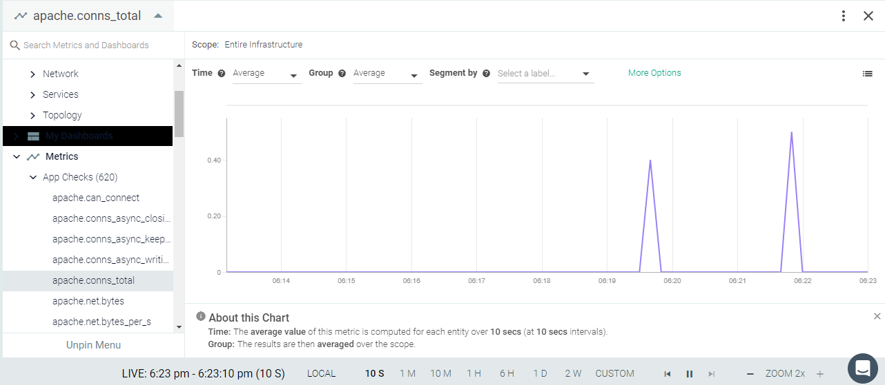 |
Apache Kafka
Apache Kafka is a distributed streaming platform. Kafka is used for building real-time data pipelines and streaming apps. It is horizontally scalable, fault-tolerant, wicked fast, and runs in production in thousands of companies. If Kafka is installed on your environment, the Sysdig agent will automatically connect. See Default Configuration.
The Sysdig agent automatically collects metrics from Kafka via JMX polling. You need to provide consumer names and topics in the agent config file to collect consumer-based Kafka metrics.
This page describes the default configuration settings, how to edit the configuration to collect additional information, the metrics available for integration, and a sample result in the Sysdig Monitor UI.
Kafka Setup
Kafka will automatically expose all metrics. You do not need to add anything on the Kafka instance.
Sysdig Agent Configuration
Review how to Edit dragent.yaml to Integrate or Modify Application Checks.
Metrics from Kafka via JMX polling are already configured in the agent's default-settings configuration file. Metrics for consumers, however, need to use app-checks to poll the Kafka and Zookeeper API. You need to provide consumer names and topics in dragent.yaml file.
Default Configuration
Since consumer names and topics are environment-specific, a default configuration is not present in dragent.default.yaml.
Refer to the following examples for adding Kafka checks to dragent.yaml.
Warning
Remember! Never edit dragent.default.yaml directly; always edit only dragent.yaml.
Example 1: Basic Configuration
A basic example with sample consumer and topic names:
app_checks:
- name: kafka
check_module: kafka_consumer
pattern:
comm: java
arg: kafka.Kafka
conf:
kafka_connect_str: "127.0.0.1:9092" # kafka address, usually localhost as we run the check on the same instance
zk_connect_str: "localhost:2181" # zookeeper address, may be different than localhost
zk_prefix: /
consumer_groups:
sample-consumer-1: # sample consumer name
sample-topic-1: [0, ] # sample topic name and partitions
sample-consumer-2: # sample consumer name
sample-topic-2: [0, 1, 2, 3] # sample topic name and partitionsExample 2: Store Consumer Group Info (Kafka 9+)
From Kafka 9 onwards, you can store consumer group config info inside Kafka itself for better performance.
app_checks:
- name: kafka
check_module: kafka_consumer
pattern:
comm: java
arg: kafka.Kafka
conf:
kafka_connect_str: "localhost:9092"
zk_connect_str: "localhost:2181"
zk_prefix: /
kafka_consumer_offsets: true
consumer_groups:
sample-consumer-1: # sample consumer name
sample-topic-1: [0, ] # sample topic name and partitionsNote
If kafka_consumer_offsets entry is set to true the app check will look for consumer offsets in Kafka. The appcheck will also look in Kafka if zk_connect_str is not set.
Example 3: Aggregate Partitions at the Topic Level
To enable aggregation of partitions at the topic level, use kafka_consumer_topics with aggregate_partitions = true.
In this case the app check will aggregate the lag & offset values at the partition level, reducing the number of metrics collected.
Set aggregate_partitions = false to disable metrics aggregation at the partition level. In this case, the appcheck will show lag and offset values for each partition.
app_checks:
- name: kafka
check_module: kafka_consumer
pattern:
comm: java
arg: kafka.Kafka
conf:
kafka_connect_str: "localhost:9092"
zk_connect_str: "localhost:2181"
zk_prefix: /
kafka_consumer_offsets: true
kafka_consumer_topics:
aggregate_partitions: true
consumer_groups:
sample-consumer-1: # sample consumer name
sample-topic-1: [0, ] # sample topic name and partitions
sample-consumer-2: # sample consumer name
sample-topic-2: [0, 1, 2, 3] # sample topic name and partitionsExample 4: Custom Tags
Optional tags can be applied to every emitted metric, service check, and/or event.
app_checks:
- name: kafka
check_module: kafka_consumer
pattern:
comm: java
arg: kafka.Kafka
conf:
kafka_connect_str: "localhost:9092"
zk_connect_str: "localhost:2181"
zk_prefix: /
consumer_groups:
sample-consumer-1: # sample consumer name
sample-topic-1: [0, ] # sample topic name and partitions
tags: ["key_first_tag:value_1", "key_second_tag:value_2", "key_third_tag:value_3"]
Example 5: SSL and Authentication
If SSL and authentication are enabled on Kafka, use the following configuration.
app_checks:
- name: kafka
check_module: kafka_consumer
pattern:
comm: java
arg: kafka.Kafka
conf:
kafka_consumer_offsets: true
kafka_connect_str: "127.0.0.1:9093"
zk_connect_str: "localhost:2181"
zk_prefix: /
consumer_groups:
test-group:
test: [0, ]
test-4: [0, 1, 2, 3]
security_protocol: SASL_SSL
sasl_mechanism: PLAIN
sasl_plain_username: <USERNAME>
sasl_plain_password: <PASSWORD>
ssl_check_hostname: true
ssl_cafile: <SSL_CA_FILE_PATH>
#ssl_context: <SSL_CONTEXT>
#ssl_certfile: <CERT_FILE_PATH>
#ssl_keyfile: <KEY_FILE_PATH>
#ssl_password: <PASSWORD>
#ssl_crlfile: <SSL_FILE_PATH>Keyword | Description | Default Value |
|---|---|---|
security_protocol (str) | Protocol used to communicate with brokers. | |
sasl_mechanism (str) | String picking SASL mechanism when | Currently only |
sasl_plain_username (str) | Username for SASL | |
sasl_plain_password (str) | Password for SASL | |
ssl_context (ssl.SSLContext) | Pre-configured SSLContext for wrapping socket connections. If provided, all other | none |
ssl_check_hostname (bool) | Flag to configure whether SSL handshake should verify that the certificate matches the broker's hostname. | true |
ssl_cafile (str) | Optional filename of ca file to use in certificate veriication. | none |
ssl_certfile (str) | Optional filename of | none |
ssl_keyfile (str) | Optional filename containing the client private key. | none |
ssl_password (str) | Optional password to be used when loading the certificate chain. | none |
ssl_crlfile (str) | Optional filename containing the CRL to check for certificate expiration. By default, no CRL check is done. When providing a file, only the leaf certificate will be checked against this CRL. The CRL can only be checked with 2.7.9+. | none |
Metrics Available
Kafka Consumer Metrics (App Checks)
See Apache Kafka Consumer Metrics.
JMX Metrics
Result in the Monitor UI
| 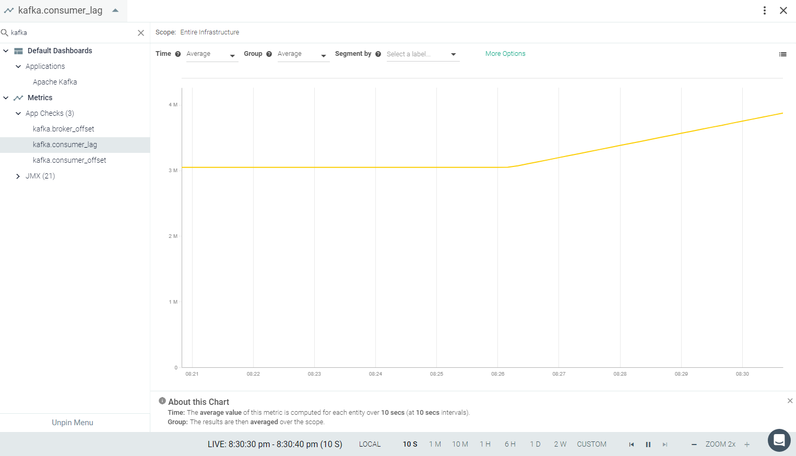 |
Example 2: Store Consumer Group Info (Kafka 9+)
Kafka Consumer Metrics (App Checks)
Consul
Consul is a distributed service mesh to connect, secure, and configure services across any runtime platform and public or private cloud. If Consul is installed on your environment, the Sysdig agent will automatically connect and collect basic metrics. If the Consul Access Control List (ACL) is configured, you may need to edit the default entries to connect. Also, additional latency metrics can be collected by modifying default entries. See the Consul#Sysdig Agent Configuration section.
Note
It's easy! Sysdig automatically detects metrics from this app based on standard default configurations.
This page describes the default configuration settings, how to edit the configuration to collect additional information, the metrics available for integration, and a sample result in the Sysdig Monitor UI.
Consul Configuration
Consul is ready to expose metrics without any special configuration.
Sysdig Agent Configuration
Review how to Edit dragent.yaml to Integrate or Modify Application Checks.
Default Configuration
By default, Sysdig's dragent.default.yaml uses the following code to connect with Consul and collect basic metrics.
app_checks:
- name: consul
pattern:
comm: consul
conf:
url: "http://localhost:8500"
catalog_checks: yesWith the dragent.default.yaml file, the below set of metrics are available in the Sysdig Monitor UI:
Metrics name |
|---|
consul.catalog.nodes_critical |
consul.catalog.nodes_passing |
consul.catalog.nodes_up |
consul.catalog.nodes_warning |
consul.catalog.total_nodes |
consul.catalog.services_critical |
consul.catalog.services_passing |
consul.catalog.services_up |
consul.catalog.services_warning |
consul.peers |
Additional metrics and event can be collected by adding configuration in dragent.yaml file. The ACL token must be provided if enabled. See the following examples.
Warning
Remember! Never edit dragent.default.yaml directly; always edit only dragent.yaml.
Example 1: Enable Leader Change Event
self_leader_check An enabled node will watch for itself to become the leader and will emit an event when that happens. It can be enabled on all nodes.
app_checks:
- name: consul
pattern:
comm: consul
conf:
url: "http://localhost:8500"
catalog_checks: yes
self_leader_check: yes
logs_enabled: trueExample 2: Enable Latency Metrics
If the network_latency_checks flag is enabled, then the Consul network coordinates will be retrieved and the latency calculated for each node and between data centers.
app_checks:
- name: consul
pattern:
comm: consul
conf:
url: "http://localhost:8500"
catalog_checks: yes
network_latency_checks: yes
logs_enabled: trueWith the above changes, you can see the following additional metrics:
Metrics name |
|---|
consul.net.node.latency.min |
consul.net.node.latency.p25 |
consul.net.node.latency.median |
consul.net.node.latency.p75 |
consul.net.node.latency.p90 |
consul.net.node.latency.p95 |
consul.net.node.latency.p99 |
consul.net.node.latency.max |
Example 3: Enable ACL Token
When the ACL System is enabled in Consul, the ACL Agent Token must be added in dragent.yaml in order to collect metrics.
Follow Consul's official documentation to Configure ACL, Bootstrap ACL and Create Agent Token.
app_checks:
- name: consul
pattern:
comm: consul
conf:
url: "http://localhost:8500"
acl_token: "xxxxxxxx-xxxx-xxxx-xxxx-xxxxxxxxxxxx" #Add agent token
catalog_checks: yes
logs_enabled: trueStatsD Metrics
In addition to the metrics from the Sysdig app-check, there are many other metrics that Consul can send using StatsD. Those metrics will be automatically collected by the Sysdig agent's StatsD integration if Consul is configured to send them.
Add statsd_address under telemetry to the Consul config file. The default config file location is /consul/config/local.json
{
...
"telemetry": {
"statsd_address": "127.0.0.1:8125"
}
...
}See Telemetry Metrics for more details.
Metrics Available
See Consul Metrics.
Result in the Monitor UI
| 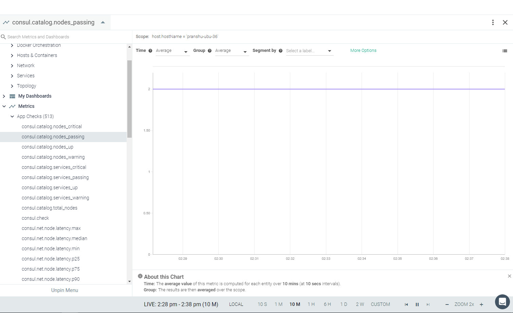 |
Couchbase
Couchbase Server is a distributed, open-source, NoSQL database engine. The core architecture is designed to simplify building modern applications with a flexible data model and simpler high availability, high scalability, high performance, and advanced security. If Couchbase is installed on your environment, the Sysdig agent will automatically connect. If authentication is configured, you may need to edit the default entries to connect. See Couchbase#Default Configuration.
The Sysdig agent automatically collects all bucket and node metrics. You can also edit the configuration to collect query metrics.
This page describes the default configuration settings, how to edit the configuration to collect additional information, the metrics available for integration, and a sample result in the Sysdig Monitor UI.
Couchbase Setup
Couchbase will automatically expose all metrics. You do not need to configure anything on the Couchbase instance.
Sysdig Agent Configuration
Review how to Edit dragent.yaml to Integrate or Modify Application Checks.
Default Configuration
By default, Sysdig's dragent.default.yaml uses the following code to connect with Couchbase and collect all bucket and node metrics.
app_checks:
- name: couchbase
pattern:
comm: beam.smp
arg: couchbase
port: 8091
conf:
server: http://localhost:8091If authentication is enabled, you need to edit dragent.yaml file to connect with Couchbase. See Example 1.
Warning
Remember! Never edit dragent.default.yaml directly; always edit only dragent.yaml.
Example 1: Authentication
Replace <username> and <password> with appropriate values and update the dragent.yaml file.
app_checks:
- name: couchbase
pattern:
comm: beam.smp
arg: couchbase
port: 8091
conf:
server: http://localhost:8091
user: <username>
password: <password>
# The following block is optional and required only if the 'path' and
# 'port' need to be set to non-default values specified here
cbstats:
port: 11210
path: /opt/couchbase/bin/cbstatsExample 2: Query Stats
Additionally, you can configure query_monitoring_url to get query monitoring stats. This is available from Couchbase version 4.5. See Query Monitoring for more detail.
app_checks:
- name: couchbase
pattern:
comm: beam.smp
arg: couchbase
port: 8091
conf:
server: http://localhost:8091
query_monitoring_url: http://localhost:8093Metrics Available
See Couchbase Metrics.
Result in the Monitor UI
| 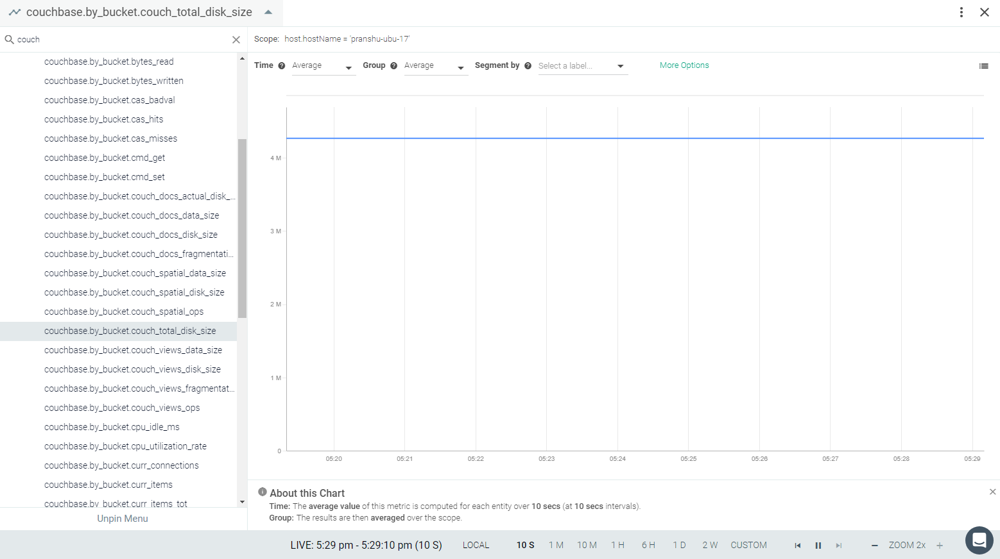 |
Elasticsearch
Elasticsearch is an open-source, distributed, document storage and search engine that stores and retrieves data structures in near real-time.Elasticsearch represents data in the form of structured JSON documents, and makes full-text search accessible via RESTful API and web clients for languages like PHP, Python, and Ruby. It’s also elastic in the sense that it’s easy to scale horizontally—simply add more nodes to distribute the load. If Elasticsearch is installed on your environment, the Sysdig agent willautomatically connect in most of the cases. See Elasticsearch#Default Configuration.
The Sysdig Agent automatically collects default metrics. You can also edit the configuration to collect Primary Shard stats.
This page describes the default configuration settings, how to edit the configuration to collect additional information, the metrics available for integration, and a sample result in the Sysdig Monitor UI.
Elasticsearch Setup
Elasticsearch is ready to expose metrics without any special configuration.
Sysdig Agent Configuration
Review how to Edit dragent.yaml to Integrate or Modify Application Checks.
Default Configuration
By default, Sysdig's dragent.default.yaml uses the following code to connect with Elasticsearch and collect basic metrics.
app_checks:
- name: elasticsearch
check_module: elastic
pattern:
port: 9200
comm: java
conf:
url: http://localhost:9200For more metrics, you may need to change the elasticsearch default setting in dragent.yaml:
Warning
Remember! Never edit dragent.default.yaml directly; always edit only dragent.yaml.
Example 1: Agent authentication to Elasticsearch cluster with auth
app_checks:
- name: elasticsearch
check_module: elastic
pattern:
port: 9200
comm: java
conf:
url: https://sysdigcloud-elasticsearch:9200
username: readonly
password: some_password
ssl_verify: falseExample 2: Enable Primary shard Statistics
app_checks:
- name: elasticsearch
check_module: elastic
pattern:
port: 9200
comm: java
conf:
url: http://localhost:9200
pshard_stats : trueEnable pshard_stats to monitor the following additional metrics:
Metric Name |
|---|
elasticsearch.primaries.flush.total |
elasticsearch.primaries.flush.total.time |
elasticsearch.primaries.docs.count |
elasticsearch.primaries.docs.deleted |
elasticsearch.primaries.get.current |
elasticsearch.primaries.get.exists.time |
elasticsearch.primaries.get.exists.total |
elasticsearch.primaries.get.missing.time |
elasticsearch.primaries.get.missing.total |
elasticsearch.primaries.get.time |
elasticsearch.primaries.get.total |
elasticsearch.primaries.indexing.delete.current |
elasticsearch.primaries.indexing.delete.time |
elasticsearch.primaries.indexing.delete.total |
elasticsearch.primaries.indexing.index.current |
elasticsearch.primaries.indexing.index.time |
elasticsearch.primaries.indexing.index.total |
elasticsearch.primaries.merges.current |
elasticsearch.primaries.merges.current.docs |
elasticsearch.primaries.merges.current.size |
elasticsearch.primaries.merges.total |
elasticsearch.primaries.merges.total.docs |
elasticsearch.primaries.merges.total.size |
elasticsearch.primaries.merges.total.time |
elasticsearch.primaries.refresh.total |
elasticsearch.primaries.refresh.total.time |
elasticsearch.primaries.search.fetch.current |
elasticsearch.primaries.search.fetch.time |
elasticsearch.primaries.search.fetch.total |
elasticsearch.primaries.search.query.current |
elasticsearch.primaries.search.query.time |
elasticsearch.primaries.search.query.total |
elasticsearch.primaries.store.size |
All Available Metrics
With the default settings and the pshard setting, the total available metrics are listed here: Elasticsearch Metrics.
Result in the Monitor UI
| 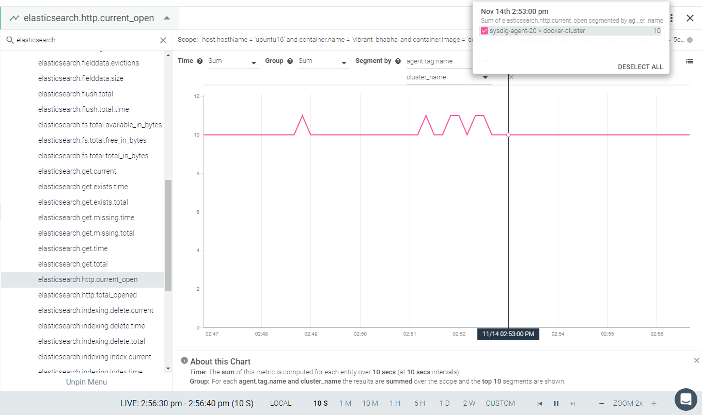 |
| 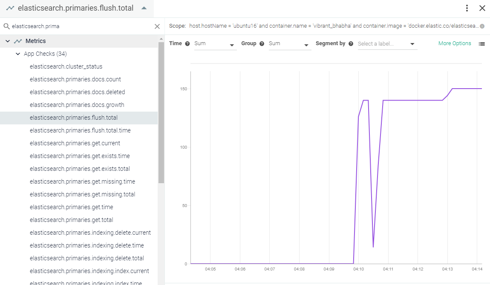 |
etcd
etcdis a distributed key-value store that provides a reliable way to store data across a cluster of machines. If etcd is installed on your environment, the Sysdig agent will automatically connect. If you are using ectd older than version 2, you may need to edit the default entries to connect. See Default Configuration.
The Sysdig Agent automatically collects all metrics.
This page describes the default configuration settings, how to edit the configuration to collect additional information, the metrics available for integration, and a sample result in the Sysdig Monitor UI.
etcd Versions
etcd v2
The app check functionality described on this page supports etcd metrics from APIs that are specific to v2 of etcd.
These APIs are present in etcd v3 as well, but export metrics only for the v2 datastores. For example, after upgrading from etcd v2 to v3, if the v2 datastores are not migrated to v3, the v2 APIs will continue exporting metrics for these datastores. If the v2 datastores are migrated to v3, the v2 APIs will no longer export metrics for these datastores.
etcd v3
etcd v3 uses a native Prometheus exporter. The exporter only exports metrics for v3 datastores. For example, after upgrading from etcd v2 to v3, if v2 datastores are not migrated to v3, the Prometheus endpoint will not export metrics for these datastores. The Prometheus endpoint will only export metrics for datastores migrated to v3 or datastores created after the upgrade to v3.
If your etcd version is v3 or higher, use the information on this page to enable an integration: Integrate Prometheus Metrics.
etcd Setup
etcd will automatically expose all metrics. You do not need to add anything to the etcd instance.
Sysdig Agent Configuration
Review how to Edit dragent.yaml to Integrate or Modify Application Checks.
The default agent configuration for etcd will look for the application on localhost, port 2379. No customization is required.
Default Configuration
By default, Sysdig's dragent.default.yaml uses the following code to connect with etcd and collect all metrics.
app_checks:
- name: etcd
pattern:
comm: etcd
conf:
url: "http://localhost:2379" etcd (before version 2) does not listen on localhost, so the Sysdig agent will not connect to it automatically. In such case, you may need edit the dragent.yaml file with the hostname and port. See Example 1.
Alternatively, you can add the option -bind-addr 0.0.0.0:4001 to the etcd command line to allow the agent to connect.
Warning
Remember! Never edit dragent.default.yaml directly; always edit only dragent.yaml.
Example 1
You can use {hostname} and {port} as a tokens in the conf: section. This is the recommended setting for Kubernetes customers.
app_checks:
- name: etcd
pattern:
comm: etcd
conf:
url: "http://{hostname}:{port}"Alternatively you can specify the real hostname and port.
app_checks:
- name: etcd
pattern:
comm: etcd
conf:
url: "http://my_hostname:4000" #etcd service listening on port 4000Example 2: SSL/TLS Certificate
If encryption is used, add the appropriate SSL/TLS entries. Provide correct path of SSL/TLS key and certificates used in etcd configuration in fields ssl_keyfile, ssl_certfile, ssl_ca_certs.
app_checks:
- name: etcd
pattern:
comm: etcd
conf:
url: "https://localhost:PORT"
ssl_keyfile: /etc/etcd/peer.key # Path to key file
ssl_certfile: /etc/etcd/peer.crt # Path to SSL certificate
ssl_ca_certs: /etc/etcd/ca.crt # Path to CA certificate
ssl_cert_validation: TrueMetrics Available
See etcd Metrics.
Result in the Monitor UI
| 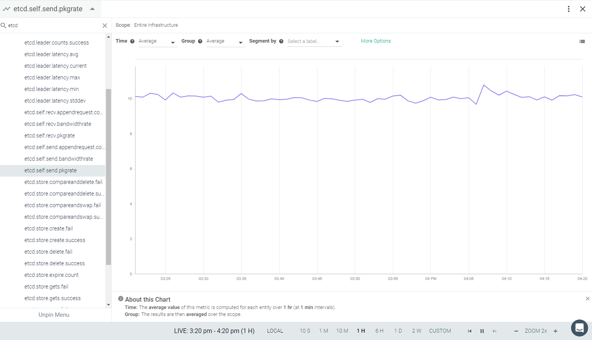 |
fluentd
Fluentd is an open source data collector, which allows unifying data collection and consumption to better use and understand data. Fluentd structures data as JSON as much as possible, to unify all facets of processing log data: collecting, filtering, buffering, and outputting logs across multiple sources and destinations. If Fluentd is installed on your environment, the Sysdig agent will automatically connect. See Default Configuration The Sysdig agent automatically collects default metrics.
This page describes the default configuration settings, how to edit the configuration to collect additional information, the metrics available for integration, and a sample result in the Sysdig Monitor UI.
Fluentd Setup
Fluentd can be installed as a package (.deb, .rpm, etc) depending on the OS flavor, or it can be deployed in a Docker container. Fluentd installation is documented here. For the examples on this page, a .deb package installation is used.
After installing Fluentd, add following lines in fluentd.conf:
<source> @type monitor_agent bind 0.0.0.0 port 24220 </source>
Sysdig Agent Configuration
Review how to Integrate Applications (Default App Checks)
Default Configuration
By default, Sysdig'sdragent.default.yaml uses the following code to connect with Fluentd and collect default metrics.
(If you use a non-standard port for monitor_agent, you can configure it as usual in the agent config file dragent.yaml.)
- name: fluentd
pattern:
comm: fluentd
conf:
monitor_agent_url: http://localhost:24220/api/plugins.jsonWarning
Remember! Never edit dragent.default.yaml directly; always edit only dragent.yaml.
Example
To generate the metric data, it is necessary to generate some logs through an application. In the following example, HTTP is used. (For more information, see Life of a Fluentd event.)
Execute the following command on in the Fluentd environment:
$ curl -i -X POST -d 'json={"action":"login","user":2}' http://localhost:8888/test.cycleExpected output: (Note: Here the status code is 200 OK, as HTTP traffic is successfully generated; it will vary per application.)
HTTP/1.1 200 OK Content-type: text/plain Connection: Keep-Alive Content-length: 0
Metrics Available
See fluentd Metrics.
Result in the Monitor UI
| 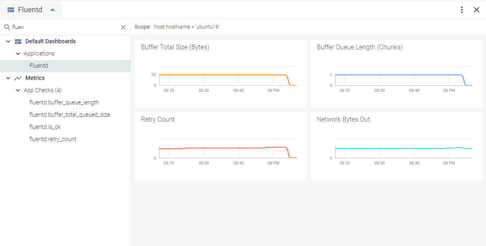 |
| 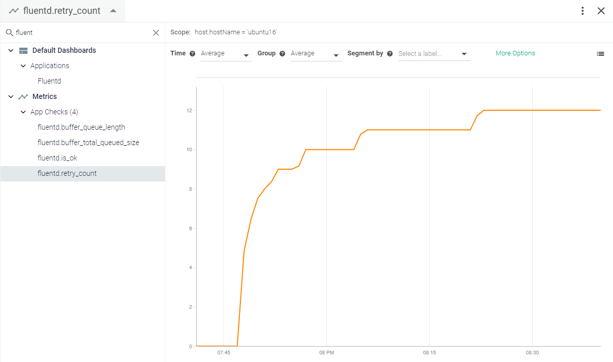 |
Go
Golang expvaris the standard interface designed to instrument and expose custom metrics from a Go program via HTTP. In addition to custom metrics, it also exports some metrics out-of-the-box, such as command line arguments, allocation stats, heap stats, and garbage collection metrics.
This page describes the default configuration settings, how to edit the configuration to collect additional information, the metrics available for integration, and a sample result in the Sysdig Monitor UI.
Go_expvar Setup
You will need to create a custom entry in the user settings config file for your Go application, due to the difficulty in determining if an application is written in Go by looking at process names or arguments. Be sure your app has expvars enabled, which means importing the expvar module and having an HTTP server started from inside your app, as follows:
import (
...
"net/http"
"expvar"
...
)
// If your application has no http server running for the DefaultServeMux,
// you'll have to have a http server running for expvar to use, for example
// by adding the following to your init function
func init() {
go http.ServeAndListen(":8080", nil)
}
// You can also expose variables that are specific to your application
// See http://golang.org/pkg/expvar/ for more information
var (
exp_points_processed = expvar.NewInt("points_processed")
)
func processPoints(p RawPoints) {
points_processed, err := parsePoints(p)
exp_points_processed.Add(points_processed)
...
}See also the following blog entry: How to instrument Go code with custom expvar metrics.
Sysdig Agent Configuration
Review how to Edit dragent.yaml to Integrate or Modify Application Checks.
Default Configuration
No default configuration for Go is provided in the Sysdig agent dragent.default.yaml file. You must edit the agent config file as described in Example 1.
Warning
Remember! Never edit dragent.default.yaml directly; always edit only dragent.yaml.
Example
Add the following code sample to dragent.yaml to collect Go metrics.
app_checks:
- name: go-expvar
check_module: go_expvar
pattern:
comm: go-expvar
conf:
expvar_url: "http://localhost:8080/debug/vars" # automatically match url using the listening port
# Add custom metrics if you want
metrics:
- path: system.numberOfSeconds
type: gauge # gauge or rate
alias: go_expvar.system.numberOfSeconds
- path: system.lastLoad
type: gauge
alias: go_expvar.system.lastLoad
- path: system.numberOfLoginsPerUser/.* # You can use / to get inside the map and use .* to match any record inside
type: gauge
- path: system.allLoad/.*
type: gaugeMetrics Available
See Go Metrics.
Result in the Monitor UI
| 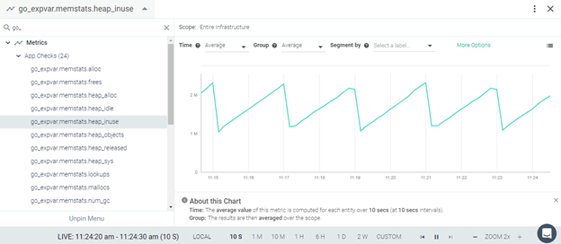 |
| 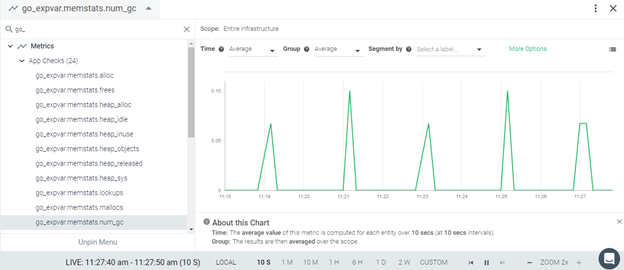 |
HAProxy
HAProxy provides a high-availability load balancer and proxy server for TCP- and HTTP-based applications which spreads requests across multiple servers.
The Sysdig agent automatically collects haproxy metrics. You can also edit the agent configuration file to collect additional metrics.
This page describes the default configuration settings, how to edit the configuration to collect additional information, the metrics available for integration, and a sample result in the Sysdig Monitor UI.
HAProxy Setup
The stats feature must be enabled on your HAProxy instance. This can be done by adding the following entry to the HAProxy configuration file /etc/haproxy/haproxy.cfg
listen stats bind :1936 mode http stats enable stats hide-version stats realm Haproxy\ Statistics stats uri /haproxy_stats stats auth stats:stats
Sysdig Agent Configuration
Review how to Edit dragent.yaml to Integrate or Modify Application Checks.
Default Configuration
By default, Sysdig's dragent.default.yaml uses the following code to connect with HAProxy and collect haproxy metrics:
app_checks:
- name: haproxy
pattern:
comm: haproxy
port: 1936
conf:
username: stats
password: stats
url: http://localhost:1936/
collect_aggregates_only: True
log_errors: falseYou can get a few additional status metrics by editing the configuration in dragent.yaml,as in the following examples.
Warning
Remember! Never edit dragent.default.yaml directly; always edit only dragent.yaml
Example: Collect Status Metrics Per Service
Enable the collect_status_metrics flag to collect the metrics haproxy.count_per_status, and haproxy.backend_hosts.
app_checks:
- name: haproxy
pattern:
comm: haproxy
port: 1936
conf:
username: stats
password: stats
url: http://localhost:1936/haproxy_stats
collect_aggregates_only: True
collect_status_metrics: True
log_errors: falseExample: Collect Status Metrics Per Host
Enable:
collect_status_metrics_by_host:Instructs the check to collect status metrics per host, instead of per service. This only applies if`collect_status_metrics`istrue.tag_service_check_by_host:When this flag is set, the hostname is also passed with the service check 'haproxy.backend_up'.By default, only the backend name and service name are associated with it.
app_checks:
- name: haproxy
pattern:
comm: haproxy
port: 1936
conf:
username: stats
password: stats
url: http://localhost:1936/haproxy_stats
collect_aggregates_only: True
collect_status_metrics: True
collect_status_metrics_by_host: True
tag_service_check_by_host: True
log_errors: falseExample: Collect HAProxy Stats by UNIX Socket
If you’ve configured HAProxy to report statistics to a UNIX socket, you can set the url in dragent.yaml to the socket’s path (e.g., unix:///var/run/haproxy.sock).
Edit your HAProxy configuration file ( /etc/haproxy/haproxy.cfg ) to add the following lines to the global section:
global
[snip]
stats socket /run/haproxy/admin.sock mode 660 level admin
stats timeout 30s
[snip]Add the socket URL from the HAProxy config to the dragent.yaml file:
app_checks:
- name: haproxy
pattern:
comm: haproxy
conf:
url: unix:///run/haproxy/admin.sock
log_errors: TrueMetrics Available
See HAProxy Metrics.
Result in the Monitor UI
| 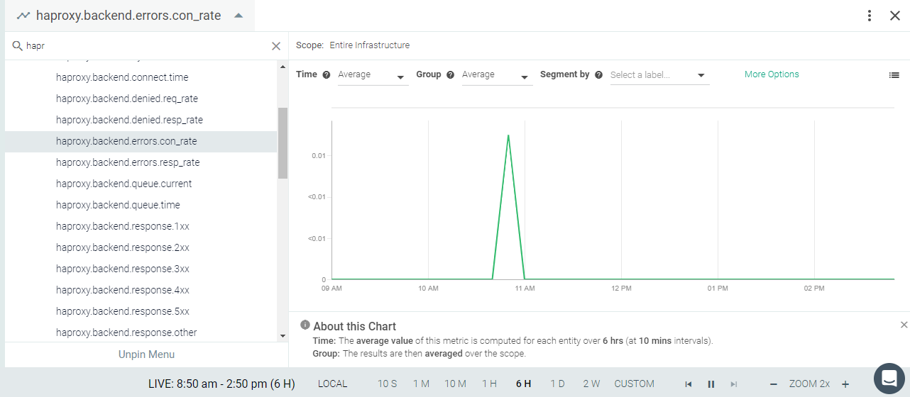 |
| 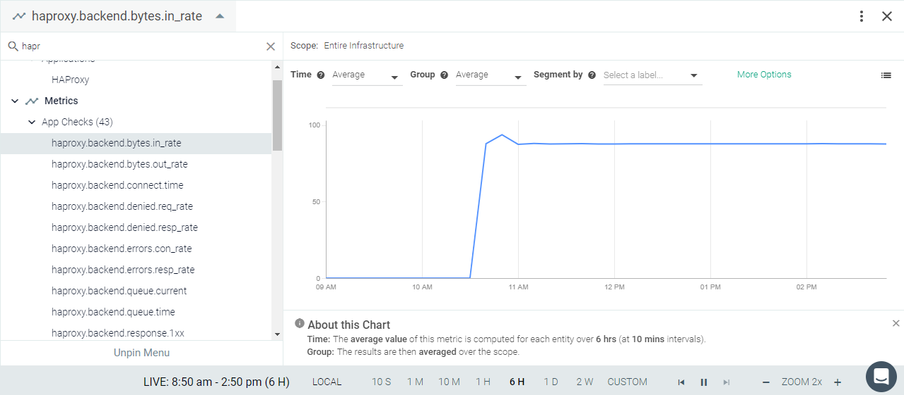 |
HTTP
The HTTP check monitors HTTP-based applications for URL availability.
This page describes the default configuration settings, how to edit the configuration to collect additional information, the metrics available for integration, and a sample result in the Sysdig Monitor UI.
HTTP Setup
You do not need to configure anything on HTTP-based applications for the Sysdig agent to connect.
Sysdig Agent Configuration
Review how to Edit dragent.yaml to Integrate or Modify Application Checks.
Default Configuration
No default entry is present in the dragent.default.yaml for the HTTP check. You need to add an entry in dragent.yaml as shown in following examples.
Warning
Never edit dragent.default.yaml directly; always edit only dragent.yaml.
Example 1
First you must identify the process pattern (comm:). It must match an actively running process for the HTTP check to work. Sysdig recommends the process be the one that is serving the URL being checked.
If the URL is is remote from the agent, the user should use a process that is always running, such as "systemd".
Confirm the "comm" value using the following command:
cat /proc/1/comm
Add the following entry to the dragent.yaml file and modify the 'name:''comm:' and 'url:' parameters as needed:
app_checks:
- name: EXAMPLE_WEBSITE
check_module: http_check
pattern:
comm: systemd
conf:
url: https://www.MYEXAMPLE.comExample 2
There are multiple configuration options available with the HTTP check. A full list is provided in the table following Example 2. These keys should be listed under the conf: section of the configuration in Example 1.
app_checks:
- name: EXAMPLE_WEBSITE
check_module: http_check
pattern:
comm: systemd
conf:
url: https://www.MYEXAMPLE.com
# timeout: 1
# method: get
# data:
# <KEY>: <VALUE>
# content_match: '<REGEX>''
# reverse_content_match: false
# username: <USERNAME>
# ntlm_domain: <DOMAIN>
# password: <PASSWORD>
# client_cert: /opt/client.crt
# client_key: /opt/client.key
# http_response_status_code: (1|2|3)\d\d
# include_content: false
# collect_response_time: true
# disable_ssl_validation: true
# ignore_ssl_warning: false
# ca_certs: /etc/ssl/certs/ca-certificates.crt
# check_certificate_expiration: true
# days_warning: <THRESHOLD_DAYS>
# check_hostname: true
# ssl_server_name: <HOSTNAME>
# headers:
# Host: alternative.host.example.com
# X-Auth-Token: <AUTH_TOKEN>
# skip_proxy: false
# allow_redirects: true
# include_default_headers: true
# tags:
# - <KEY_1>:<VALUE_1>
# - <KEY_2>:<VALUE_2>Key | Description |
|---|---|
| The URL to test. |
| The time in seconds to allow for a response. |
| The HTTP method. This setting defaults to GET, though many other HTTP methods are supported, including POST and PUT. |
| The data option is only available when using the POST method. Data should be included as key-value pairs and will be sent in the body of the request. |
| A string or Python regular expression. The HTTP check will search for this value in the response and will report as DOWN if the string or expression is not found. |
| When true, reverses the behavior of the |
| If your service uses basic authentication, you can provide the username and password here. |
| A string or Python regular expression for an HTTP status code. This check will report DOWN for any status code that does not match. This defaults to 1xx, 2xx and 3xx HTTP status codes. For example: |
| When set to |
| By default, the check will collect the response time (in seconds) as the metric |
| This setting will skip SSL certificate validation and is enabled by default. If you require SSL certificate validation, set this to |
| When SSL certificate validation is enabled (see setting above), this setting allows you to disable security warnings. |
| This setting allows you to override the default certificate path as specified in |
| When Note that this will cause the SSL certificate to be validated, regardless of the value of the |
| When |
| When |
| This parameter allows you to send additional headers with the request. e.g. |
| If set, the check will bypass proxy settings and attempt to reach the check URL directly. This defaults to |
| This setting allows the service check to follow HTTP redirects and defaults to |
| A list of arbitrary tags that will be associated with the check. |
Metrics Available
HTTP metrics concern response time and SSL certificate expiry information.
See HTTP Metrics.
Service Checks
http.can_connect:
Returns DOWN when any of the following occur:
the request to URL times out
the response code is
4xx/5xx,or it doesn’t match the pattern provided in thehttp_response_status_codethe response body does not contain the pattern in
content_matchreverse_content_matchistrueand the response body does contain the pattern incontent_matchURI contains
httpsanddisable_ssl_validationisfalse, and the SSL connection cannot be validatedOtherwise, returns UP.
Segmentation of the http.can_connect can be done by URL.
http.ssl_cert:
The check returns:
DOWN if the URL's certificate has already expired
WARNING if the URL's certificate expires in less than
days_warningdaysOtherwise, returns UP.
To disable this check, set check_certificate_expiration to false.
Result in the Monitor UI
 |
Jenkins
Jenkins is an open-source automation server which helps to automate part of the software development process, permitting continuous integration and facilitating the technical aspects of continuous delivery. It supports version control tools (such as Subversion, Git, Mercurial, etc), can execute Apache Ant, Apache Maven and SBT-based projects, and allows shell scripts and Windows batch commands. If Jenkins is installed on your environment, the Sysdig agent will automatically connect and collect all Jenkins metrics. See Jenkins#Default Configuration.
This page describes the default configuration settings, the metrics available for integration, and a sample result in the Sysdig Monitor UI.
Jenkins Setup
Requires the standard Jenkins server setup with one or more Jenkins Jobs running on it.
Sysdig Agent Configuration
Review how to Edit dragent.yaml to Integrate or Modify Application Checks.
Warning
Remember! Never edit dragent.default.yaml directly; always edit only dragent.yaml.
Default Configuration
By default, Sysdig's dragent.default.yaml uses the following code to connect with Jenkins and collect basic metrics.
- name: jenkins
pattern:
comm: java
port: 50000
conf:
name: default
jenkins_home: /var/lib/jenkins #this depends on your environmentJenkins Folders Plugin
By default, the Sysdig agent does not monitor jobs under job folders created using Folders plugin.
Set jobs_folder_depth to monitor these jobs. Job folders are scanned recursively for jobs until the designated folder depth is reached. The default value = 1.
app_checks:
- name: jenkins
pattern:
comm: java
port: 50000
conf:
name: default
jenkins_home: /var/lib/jenkins
jobs_folder_depth: 3Metrics Available
The following metrics will be available only after running one or more Jenkins jobs. They handle queue size, job duration, and job waiting time.
See Jenkins Metrics.
Result in the Monitor UI
| 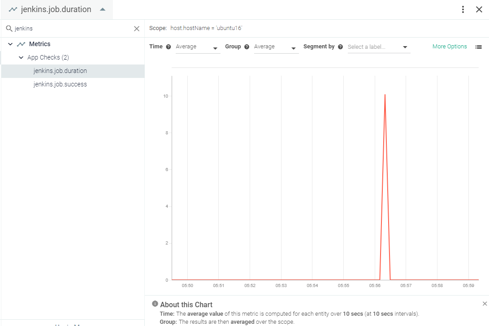 |
 |
Lighttpd
Lighttpd is a secure, fast, compliant, and very flexible web server that has been optimized for high-performance environments. It has a very low memory footprint compared to other web servers and takes care of CPU load. Its advanced feature set (FastCGI, CGI, Auth, Output Compression, URL Rewriting, and many more) make Lighttpd the perfect web server software for every server that suffers load problems. If Lighttpd is installed on your environment, the Sysdig agent will automatically connect. See Default Configuration. The Sysdig agent automatically collects the default metrics.
This page describes the default configuration settings, how to edit the configuration to collect additional information, the metrics available for integration, and a sample result in the Sysdig Monitor UI.
Note
At this time, the Sysdig app check for Lighttpd supports Lighttpd version 1.x.x only.
Lighttpd Setup
For Lighttpd, the status page must be enabled. Add mod_status in the /etc/lighttpd/lighttpd.conf config file:
server.modules = ( ..., "mod_status", ... )
Then configure an endpoint for it. If (for security purposes) you want to open the status page only to users from the local network, it can be done by adding the following lines in the /etc/lighttpd/lighttpd.conf file :
$HTTP["remoteip"] == "127.0.0.1/8" {
status.status-url = "/server-status"
}If you want an endpoint to be open for remote users based on authentication, then the mod_auth module should be enabled in the /etc/lighttpd/lighttpd.conf config file:
server.modules = ( ..., "mod_auth", ... )
Then you can add the auth.require parameter in the /etc/lighttpd/lighttpd.conf config file:
auth.require = ( "/server-status" => ( "method" => ... , "realm" => ... , "require" => ... ) )
For more information on the auth.require parameter, see the Lighttpd documentation..
Sysdig Agent Configuration
Review how to Edit dragent.yaml to Integrate or Modify Application Checks.
Default Configuration
By default, Sysdig's dragent.default.yaml uses the following code to connect with Lighttpd and collect basic metrics.
app_checks:
- name: lighttpd
pattern:
comm: lighttpd
conf:
lighttpd_status_url: "http://localhost:{port}/server-status?auto"
log_errors: falseMetrics Available
These metrics are supported for Lighttpd version 1.x.x only. Lighttpd version 2.x.x is being built and is NOT ready for use as of this publication.
See Lighttpd Metrics.
Result in the Monitor UI
| 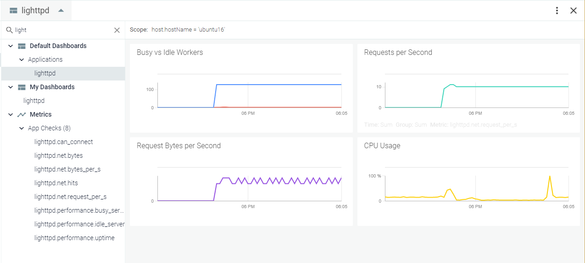 |
| 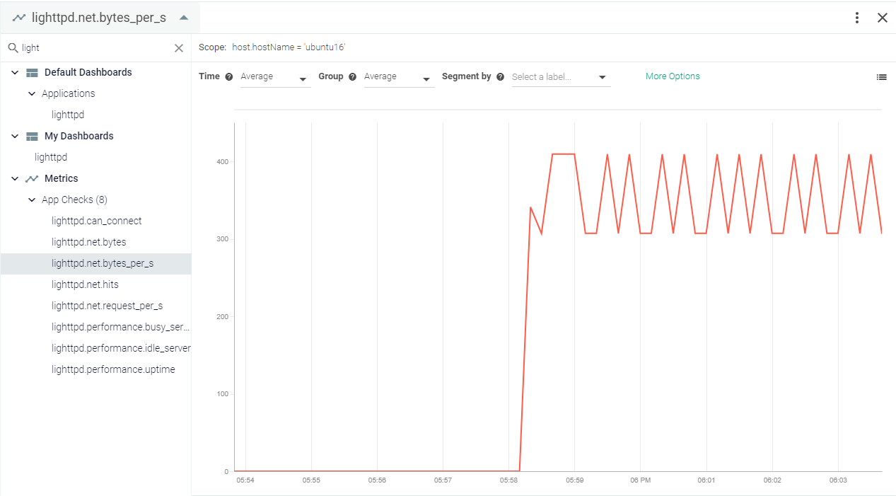 |
| 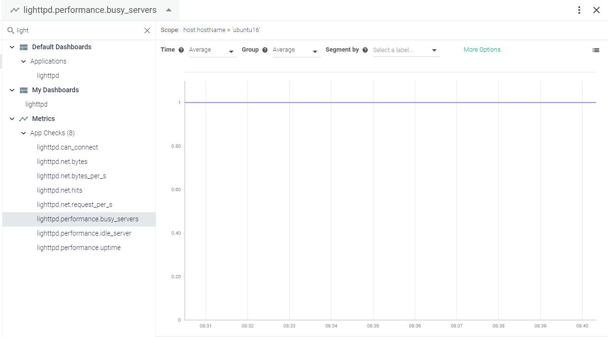 |
| 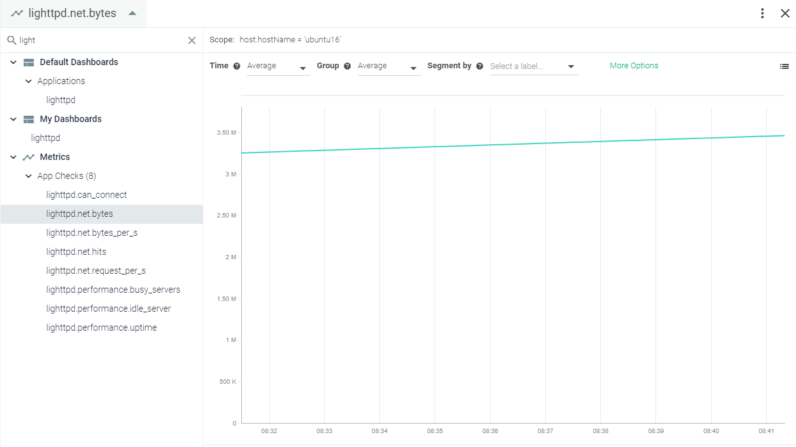 |
| 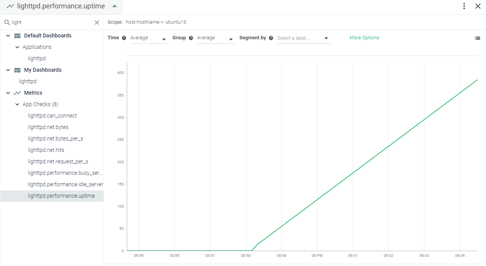 |
Memcached
Memcached is an in-memory key-value store for small chunks of arbitrary data (strings, objects) from the results of database calls, API calls, or page rendering. If Memcached is installed on your environment, the Sysdig agent will automatically connect. See Default Configuration. The Sysdig agent automatically collects basic metrics. You can also edit the configuration to collect additional metrics related to items and slabs.
This page describes the default configuration settings, how to edit the configuration to collect additional information, the metrics available for integration, and a sample result in the Sysdig Monitor UI.
Memcached Setup
Memcached will automatically expose all metrics. You do not need to add anything on Memcached instance.
Sysdig Agent Configuration
Review how to Edit dragent.yaml to Integrate or Modify Application Checks.
Default Configuration
By default, Sysdig's dragent.default.yaml uses the following code to connect with Memcached and collect basic metrics:
app_checks:
- name: memcached
check_module: mcache
pattern:
comm: memcached
conf:
url: localhost
port: "{port}"Additional metrics can be collected by editing Sysdig's configuration file dragent.yaml. If SASL is enabled, authentication parameters must be added to dragent.yaml.
Warning
Remember! Never edit dragent.default.yaml directly; always edit only dragent.yaml.
Example 1: Additional Metrics
memcache.items.* and memcache.slabs.* can be collected by setting flags in the options section, as follows . Either value can be set to false if you do not want to collect metrics from them.
app_checks:
- name: memcached
check_module: mcache
pattern:
comm: memcached
conf:
url: localhost
port: "{port}"
options:
items: true # Default is false
slabs: true # Default is falseExample 2: SASL
SASL authentication can be enabled with Memcached (see instructions here). If enabled, credentials must be provided against username and password fields as shown in Example 2.
app_checks:
- name: memcached
check_module: mcache
pattern:
comm: memcached
conf:
url: localhost
port: "{port}"
username: <username>
# Some memcached version will support <username>@<hostname>.
# If memcached is installed as a container, hostname of memcached container will be used as username
password: <password>Metrics Available
See Memcached Metrics.
Result in the Monitor UI
| 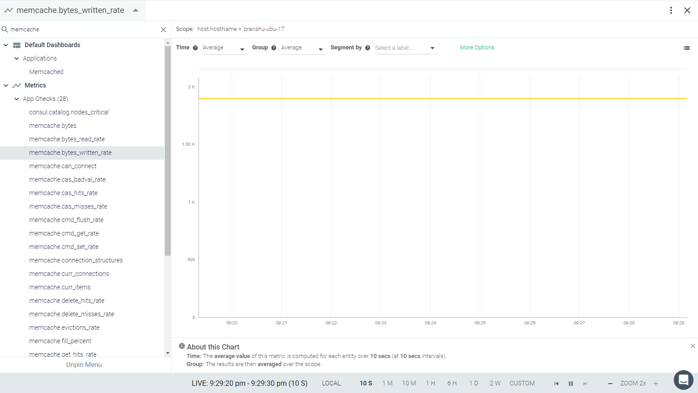 |
| 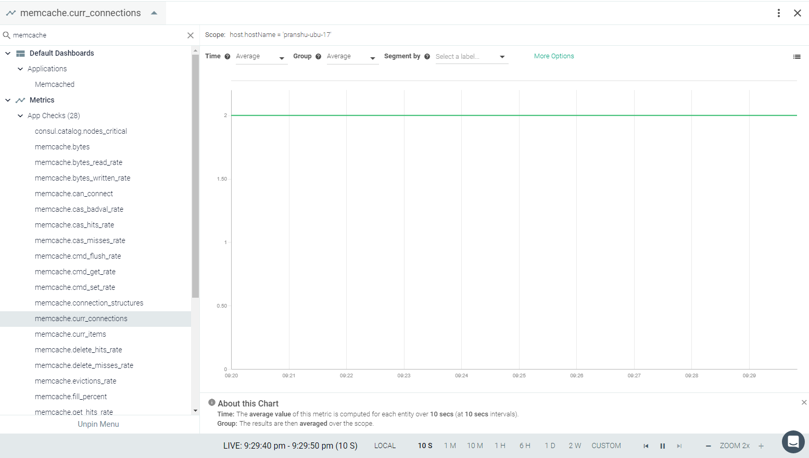 |
| 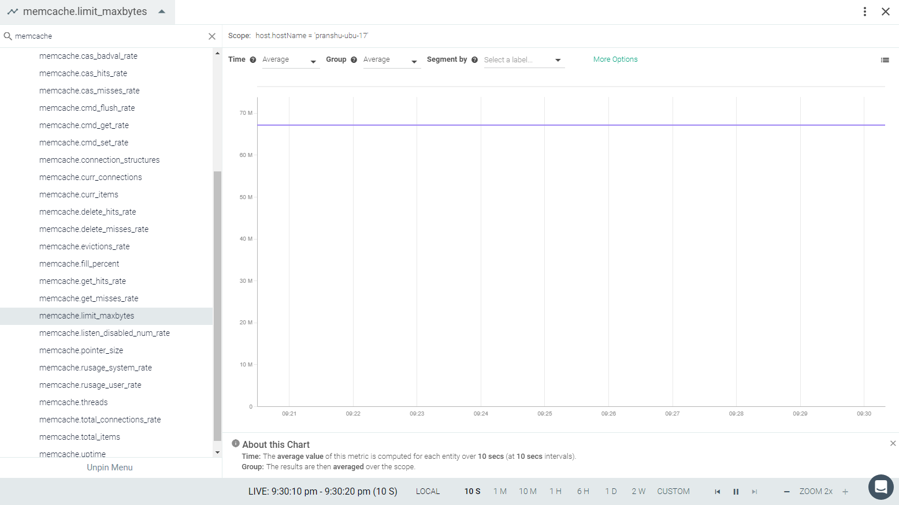 |
| 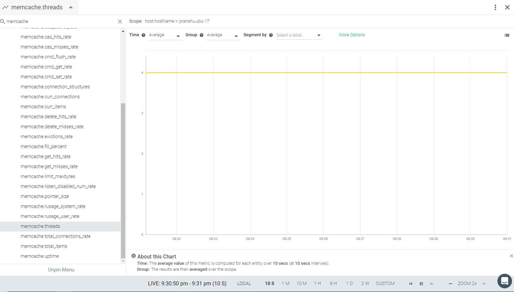 |
| 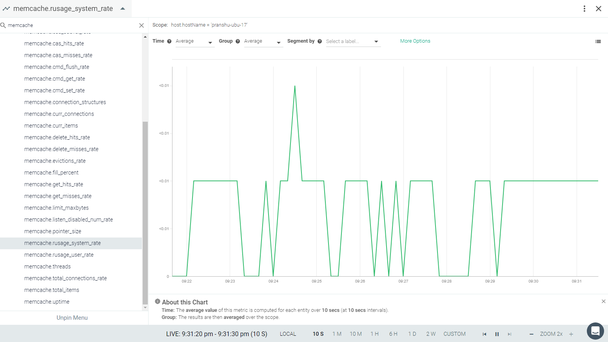 |
Mesos/Marathon
Mesos is built using the same principles as the Linux kernel, only at a different level of abstraction. The Mesos kernel runs on every machine and provides applications (e.g., Hadoop, Spark, Kafka, Elasticsearch) with APIs for resource management and scheduling across entire datacenter and cloud environments. The Mesos metrics are divided into master and agent. Marathon is a production-grade container orchestration platform for Apache Mesos.
If Mesos and Marathon are installed in your environment, the Sysdig agent will automatically connect and start collecting metrics.You may need to edit the default entries to add a custom configuration if the default does not work. See Default Configuration.
This page describes the default configuration settings, how to edit the configuration to collect additional information, the metrics available for integration, and a sample result in the Sysdig Monitor UI.
Mesos/Marathon Setup
Both Mesos and Marathon will automatically expose all metrics. You do not need to add anything to the Mesos/Marathon instance.
Sysdig Agent Configuration
Review how to Edit dragent.yaml to Integrate or Modify Application Checks.
The Sysdig agent has different entries for mesos-master, mesos-slave and marathon in its configuration file. Default entries are present in Sysdig's dragent.default.yaml file and collect all metrics for Mesos. For Marathon, it collects basic metrics. You may need add configuration to collect additional metrics.
Default Configuration
In the URLs for mesos-master and mesos-slave, {mesos_url} will be replaced with either the hostname of the auto-detected mesos master/slave (if auto-detection is enabled), or with an explicit value from mesos_state_uri otherwise.
In the URLs for marathon, {marathon_url} will be replaced with the hostname of the first configured/discovered Marathon framework.
For all Mesos and Marathon apps, {auth_token} will either be blank or an auto-generated token obtained via the /acs/api/v1/auth/login endpoint.
|
Mesos Agent
|
Marathon
|
Warning
Remember! Never edit dragent.default.yaml directly; always edit only dragent.yaml.
Example 1
Enable the flag full_metrics to collect all metrics for marathon.
The following additional metrics are collected with this configuration:
marathon.cpusmarathon.diskmarathon.instancesmarathon.mem
|
Metrics Available
See Mesos Master Metrics.
See Mesos Agent Metrics.
See Marathon Metrics.
Result in the Monitor UI
| 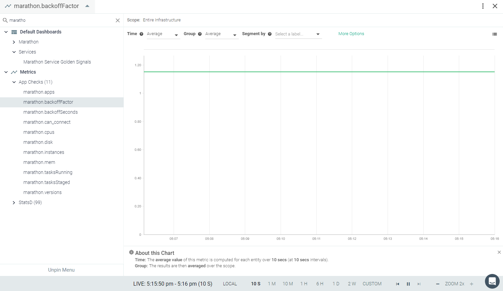 |
| 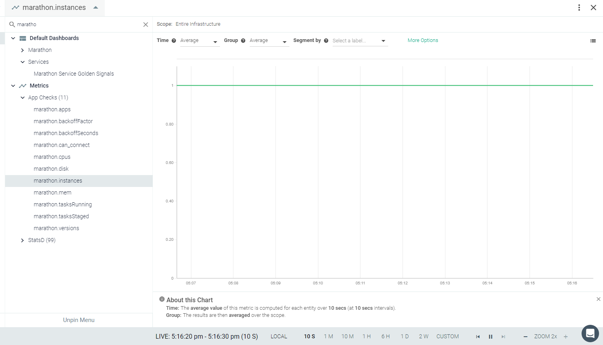 |
MongoDB
MongoDB is an open-source database management system (DBMS) that uses a document-oriented database model which supports various forms of data. If MongoDB is installed in your environment, the Sysdig agent will automatically connect and collect basic metrics (if authentication is not used). You may need to edit the default entries to connect and collect additional metrics. See Default Configuration.
This page describes the default configuration settings, how to edit the configuration to collect additional information, the metrics available for integration, and a sample result in the Sysdig Monitor UI.
MongoDB Setup
Create a read-only user for the Sysdig agent.
# Authenticate as the admin user.
use admin
db.auth("admin", "<YOUR_MONGODB_ADMIN_PASSWORD>")
# On MongoDB 2.x, use the addUser command.
db.addUser("sysdig-cloud", "sysdig-cloud-password", true)
# On MongoDB 3.x or higher, use the createUser command.
db.createUser({
"user":"sysdig-cloud",
"pwd": "sysdig-cloud-password",
"roles" : [
{role: 'read', db: 'admin' },
{role: 'clusterMonitor', db: 'admin'},
{role: 'read', db: 'local' }
]
})Sysdig Agent Configuration
Review how to Edit dragent.yaml to Integrate or Modify Application Checks.
Default Configuration
By default, Sysdig's dragent.default.yaml uses the following code to connect with MongoDB.
app_checks:
- name: mongodb
check_module: mongo
pattern:
comm: mongod
conf:
server: "mongodb://localhost:{port}/admin"The default MongoDB entry should work for without modification if authentication is not configured. If you have enabled password authentication, the entry will need to be changed.
Some metrics are not available by default. Additional configuration needs to be provided to collect them as shown in following examples.
Warning
Remember! Never edit dragent.default.yaml directly; always edit only dragent.yaml.
Example 1: With Authentication
Replace <username> and <password> with actual username and password.
app_checks:
- name: mongodb
check_module: mongo
pattern:
comm: mongod
conf:
server: mongodb://<username>:<password>@localhost:{port}/admin
replica_check: trueExample 2: Additional Metrics
Some metrics are not collected by default. These can be collected by adding additional_metrics section in the dragent.yaml file under the app_checks mongodb configuration.
Available options are:
collection - Metrics of the specified collections
metrics.commands - Use of database commands
tcmalloc - TCMalloc memory allocator
top - Usage statistics for each collection
app_checks:
- name: mongodb
check_module: mongo
pattern:
comm: mongod
conf:
server: mongodb://<username>:<password>@localhost:{port}/admin
replica_check: true
additional_metrics:
- collection
- metrics.commands
- tcmalloc
- topList of metrics with respective entries in dragent.yaml:
metric prefix | Entry under |
|---|---|
mongodb.collection | collection |
mongodb.usage.commands | top |
mongodb.usage.getmore | top |
mongodb.usage.insert | top |
mongodb.usage.queries | top |
mongodb.usage.readLock | top |
mongodb.usage.writeLock | top |
mongodb.usage.remove | top |
mongodb.usage.total | top |
mongodb.usage.update | top |
mongodb.usage.writeLock | top |
mongodb.tcmalloc | tcmalloc |
mongodb.metrics.commands | metrics.commands |
Metrics Available
See MongoDB Metrics.
Result in the Monitor UI
| 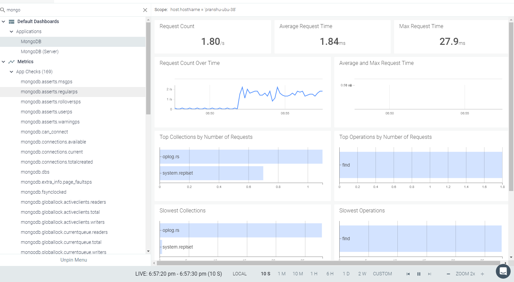 |
| 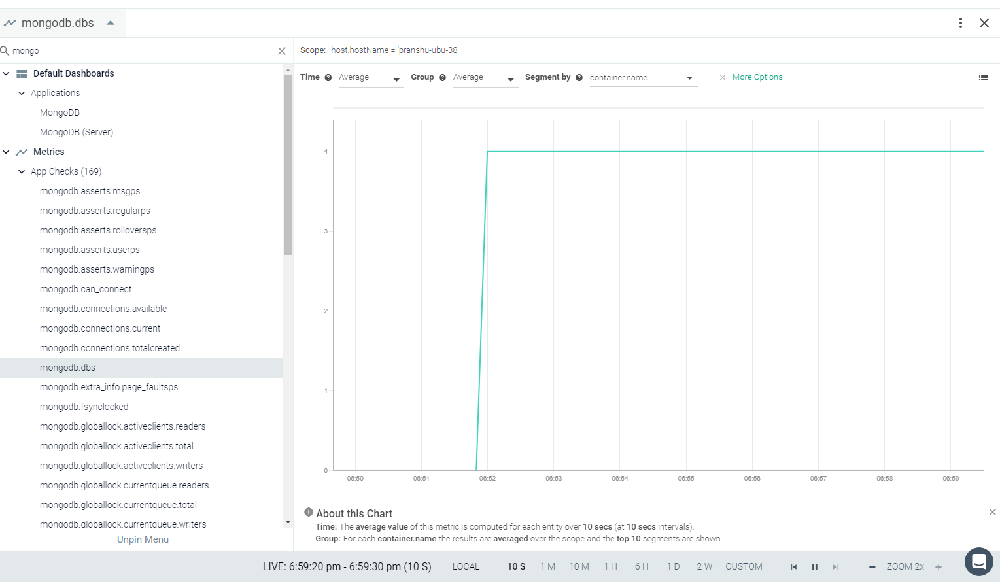 |
| 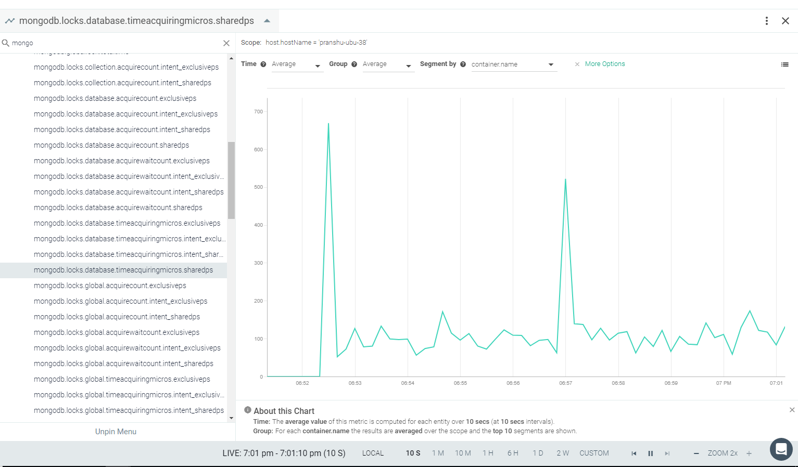 |
| 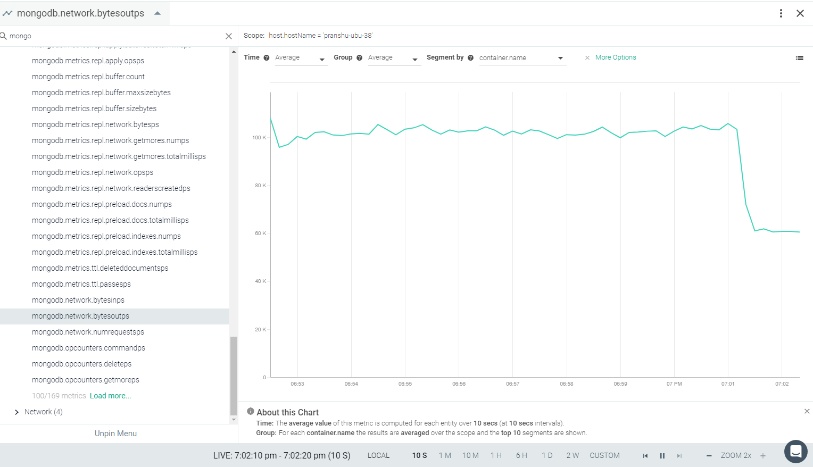 |
| 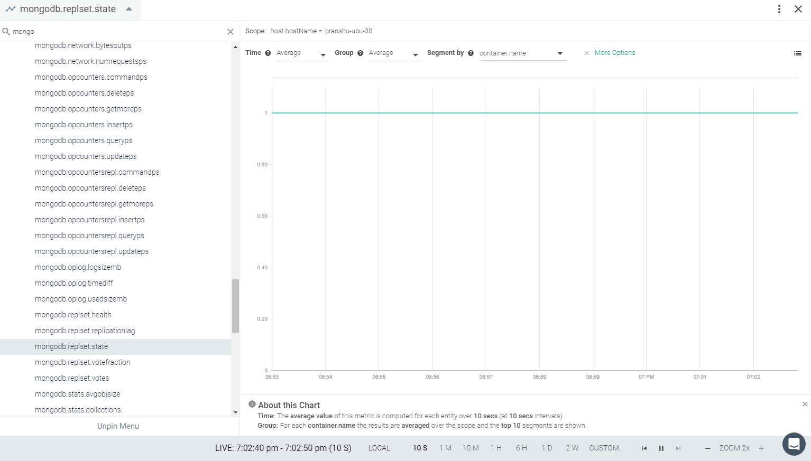 |
| 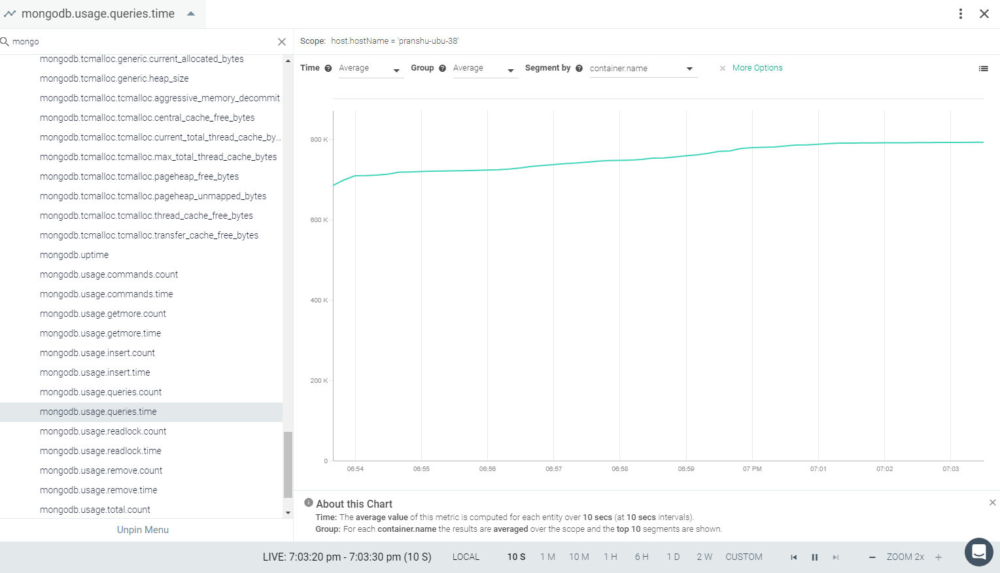 |
MySQL
MySQL is the world’s most popular open-source database. With its proven performance, reliability, and ease-of-use, MySQL has become the leading database choice for web-based applications, used by high profile web properties including Facebook, Twitter, YouTube. Additionally, it is an extremely popular choice as an embedded database, distributed by thousands of ISVs and OEMs.
Supported Distribution
The MySQL AppCheck is supported for following MySQL versions.
If the Sysdig agent is installed as a Process:
Host with Python 2.7: MySQL versions supported - 5.5 to 8
Host with Python 2.6: MySQL versions supported - 4.1 to 5.7 (tested with v5.x only)
NOTE: This implies that MySQL 5.5, 5.6 and 5.7 are supported on both the Python 2.6 and 2.7 environments.
If the Sysdig agent is installed as a Docker container:
The Docker container of the Sysdig agent has Python 2.7 installed. If it is installed, respective versions against Python 2.7 will be supported.
The following environments have been tested and are supported. Tests environments include both the Host/Process and Docker environment.
Python | MySQL | ||||
|---|---|---|---|---|---|
5.1 | 5.5 | 5.6 | 5.7 | 8 | |
2.7 (Ubuntu 16/ CentOS 7) | No | Yes | Yes | Yes | Yes |
2.6 (CentOS 6) | Yes | Yes | Yes | Yes | No |
MySQL Setup
A user must be created on MySQL so the Sysdig agent can collect metrics. To configure credentials, run the following commands on your server, replacing the sysdig-clouc-password parameter.
MySQL version-specific commands to create a user are provided below.
# MySQL 5.6 and earlier CREATE USER 'sysdig-cloud'@'127.0.0.1' IDENTIFIED BY 'sysdig-cloud-password'; GRANT PROCESS, REPLICATION CLIENT ON *.* TO 'sysdig-cloud'@'127.0.0.1' WITH MAX_USER_CONNECTIONS 5; ## OR ## # MySQL 5.7 and 8 CREATE USER 'sysdig-cloud'@'127.0.0.1' IDENTIFIED BY 'sysdig-cloud-password' WITH MAX_USER_CONNECTIONS 5; GRANT PROCESS, REPLICATION CLIENT ON *.* TO 'sysdig-cloud'@'127.0.0.1';
Sysdig Agent Configuration
Review how to Edit dragent.yaml to Integrate or Modify Application Checks.
There is no default configuration for MySQL, as a unique user and password are required for metrics polling.
Add the entry for MySQL into dragent.yaml , updating the user and pass field credentials.
app_checks:
- name: mysql
pattern:
comm: mysqld
conf:
server: 127.0.0.1
user: sysdig-cloud
pass: sysdig-cloud-password
Metrics Available
See MySQL Metrics.
Result in the Monitor UI
| 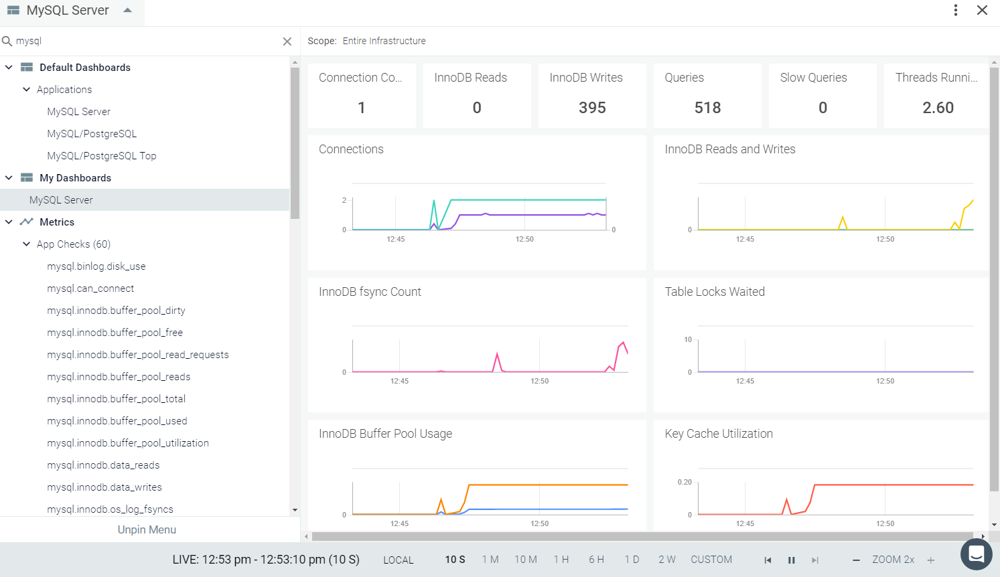 |
| 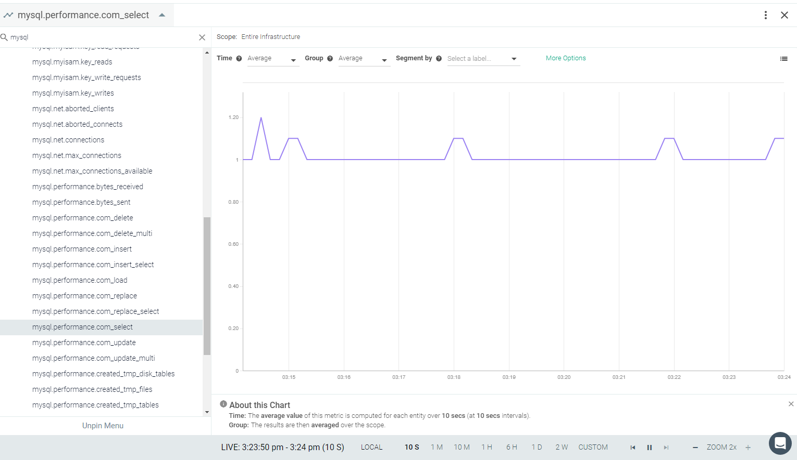 |
| 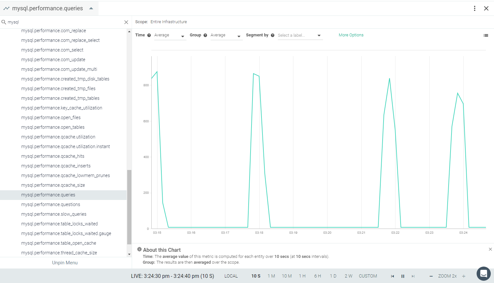 |
| 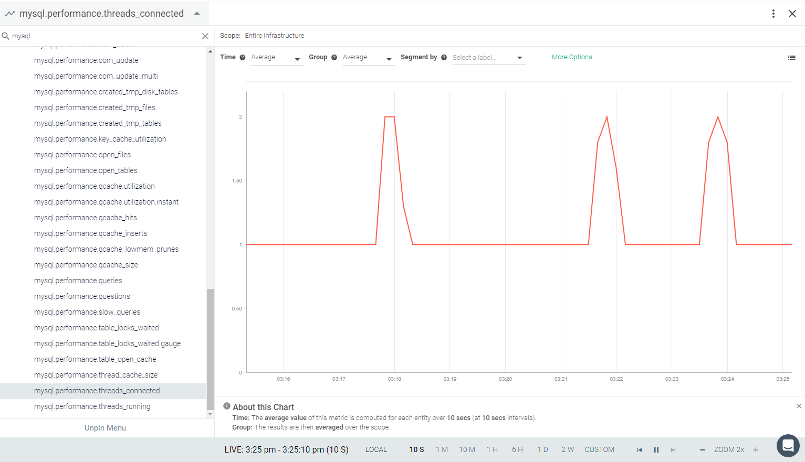 |
| 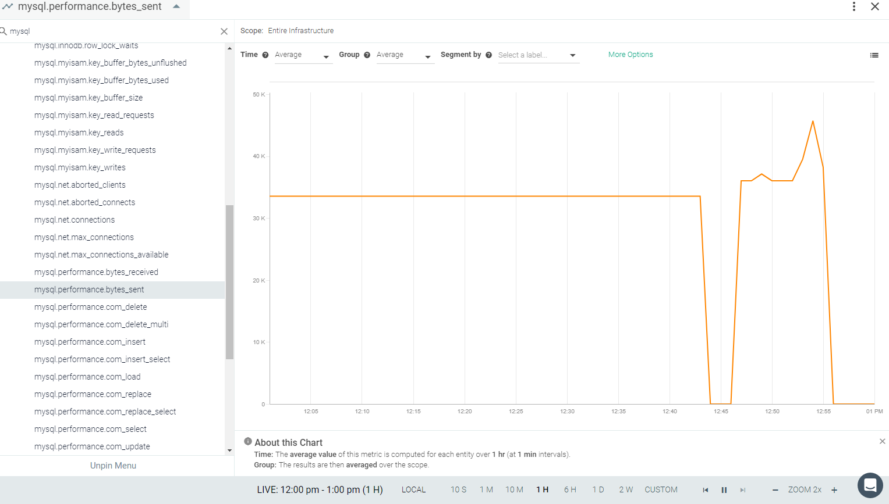 |
| 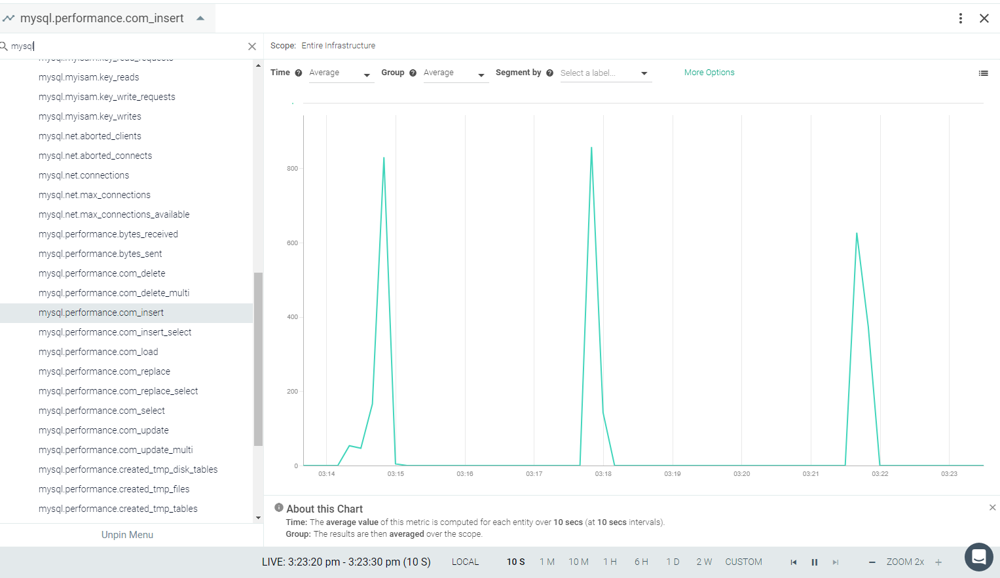 |
NGINX and NGINX Plus
NGINX is open source software for web serving, reverse proxying, caching, load balancing, media streaming, and more. It started out as a web server designed for maximum performance and stability. In addition to its HTTP server capabilities, NGINX can also function as a proxy server for email (IMAP, POP3, and SMTP) and a reverse proxy and load balancer for HTTP, TCP, and UDP servers.
NGINX Plus isa software load balancer, web server, and content cache built on top of open source NGINX. NGINX Plus has exclusive enterprise‑grade features beyond what's available in the open source offering, including session persistence, configuration via API, and active health checks.
The Sysdig agent has a default configuration to collect metrics for open-source NGINX, provided that you have the HTTP stub status module enabled. NGINX exposes basic metrics about server activity on a simple status page with this status module. If NGINX Plus is installed, a wide range of metrics are available with the NGINX Plus API.
This page describes the setup steps for NGINX/NGINX Plus, the default configuration settings, how to edit the configuration to collect additional information, the metrics available for integration, and sample results in the Sysdig Monitor UI.
NGINX/ NGINX Plus Setup
This section describes the configuration required on the NGINX server.
The Sysdig agent will not collect metrics until the required endpoint is added to the NGINX configuration, per one of the following methods:
For NGINX (Open Source): use the stub status module
For NGINX Plus: use the Plus API
Configuration examples of each are provided below
NGINX Stub Status Module Configuration
The ngx_http_stub_status_module provides access to basic status information. It is compiled by default on most distributions. If not, it should be enabled with the --with-http_stub_status_module configuration parameter.
To check if the module is already compiled, run the following command:
nginx -V 2>&1 | grep -o with-http_stub_status_module
If
with-http_stub_status_moduleis listed, the status module is enabled. (For more information, see http://nginx.org/en/docs/http/ngx_http_stub_status_module.html.)Update the NGINX configuration file with
/nginx_statusendpoint as follows. The default NGINX configuration file is present at/etc/nginx/nginx.confor/etc/nginx/conf.d/default.conf.# HTTP context server { ... # Enable NGINX status module location /nginx_status { # freely available with open source NGINX stub_status; access_log off; # for open source NGINX < version 1.7.5 # stub_status on; } ... }
NGINX Plus API Configuration
When NGINX Plus is configured, the Plus API can be enabled by adding /api endpoint in the NGINX configuration file as follows.
The default NGINX configuration file is present at /etc/nginx/nginx.conf or /etc/nginx/conf.d/default.conf.
# HTTP context
server {
...
# Enable NGINX Plus API
location /api {
api write=on;
allow all;
}
...
}Sysdig Agent Configuration
Configuration Examples:
Example 1 (Default): When only open-source Nginx is configured.
Example 2: When only NginxPlus node is configured.
Example 3: When Nginx and NginxPlus are installed in different containers on same host.
Flag
use_plus_apiand is used for differentiating NGINX & NGINXPlus metrics.NGINXPlus metrics are differentiated with prefix
nginx.plus.*When
use_plus_api = true,nginx_plus_api_urlis used to fetch NginxPlus metrics from the NginxPlus node.nginx_status_urlis used to fetch Nginx metrics from the Nginx node (If single host is running two separate containers for Nginx and NginxPlus).
Example 1: Default Configuration
With the default configuration, only NGINX metrics will be available once the ngx_http_stub_status_module is configured.
app_checks:
- name: nginx
check_module: nginx
pattern:
exe: "nginx: worker process"
conf:
nginx_status_url: "http://localhost:{port}/nginx_status"
log_errors: trueExample 2: NGINX Plus only
With this example only NGINX Plus Metrics will be available.
app_checks:
- name: nginx
check_module: nginx
pattern:
exe: "nginx: worker process"
conf:
nginx_plus_api_url: "http://localhost:{port}/api"
use_plus_api: true
user: admin
password: admin
log_errors: trueExample 3: NGINX and NGINX Plus
This is special case where NGINX open-source and NGINX PLUS are installed on same host but in different containers. With this configuration, respective metrics will be available for NGINX and NGINX Plus containers.
app_checks:
- name: nginx
check_module: nginx
pattern:
exe: "nginx: worker process"
conf:
nginx_plus_api_url: "http://localhost:{port}/api"
nginx_status_url: "http://localhost:{port}/nginx_status"
use_plus_api: true
user: admin
password: admin
log_errors: trueList of Metrics
NGINX (Open Source)
See NGINX Metrics.
NGINX Plus
See NGINX Plus Metrics.
Result in the Monitor UI
NTP
NTP stands for Network Time Protocol. It is used to synchronize the time on your Linux system with a centralized NTP server. A local NTP server on the network can be synchronized with an external timing source to keep all the servers in your organization in-sync with an accurate time.
If the NTP check is enabled in the Sysdig agent, it reports the time offset of the local agent from an NTP server.
This page describes how to edit the configuration to collect information, the metrics available for integration, and a sample result in the Sysdig Monitor UI.
Sysdig Agent Configuration
Review how to Edit dragent.yaml to Integrate or Modify Application Checks.
Default Configuration
By default, Sysdig's dragent.default.yaml does not provide any configuration for NTP.
Add the configuration in Example 1 to the dragent.yaml file to enable NTP checks.
Warning
Never edit dragent.default.yaml directly; always edit only dragent.yaml.
Example
- name: ntp
interval: 60
pattern:
comm: systemd
conf:
host: us.pool.ntp.org
offset_threshold: 60host: (mandatory) provides the host name ofNTPserver.offset_threshold: (optional) provides the difference (in seconds) between the local clock and the NTP server, when thentp.in_syncservice check becomesCRITICAL. The default is60seconds.
Metrics Available
ntp.offset, the time difference between the local clock and the NTP reference clock, is the primary NTP metric.
See also NTP Metrics.
Service Checks
ntp.in_sync:
Returns CRITICAL if the NTP offset is greater than the threshold specified in dragent.yaml, otherwise OK.
Result in the Monitor UI
| 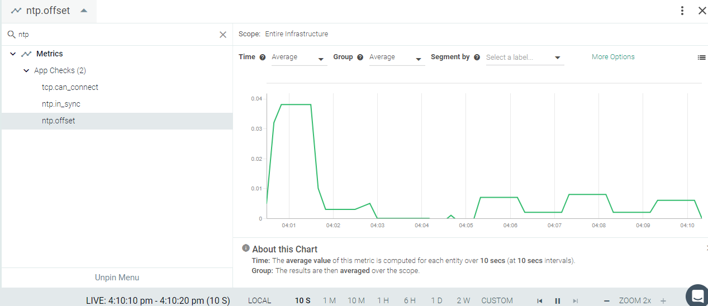 |
| 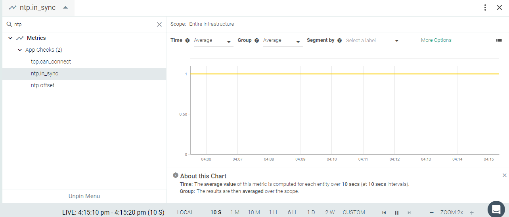 |
PGBouncer
PgBouncer is a lightweight connection pooler for PostgreSQL. If PgBouncer is installed on your environment, you may need to edit the Sysdig agent configuration file to connect. See PGBouncer#Default Configuration.
This page describes the configuration settings, the metrics available for integration, and a sample result in the Sysdig Monitor UI.
PgBouncer Setup
PgBouncer does not ship with a default stats user configuration. To configure it, you need to add a user allowed to access PgBouncer stats. Do so by adding following line in pgbouncer.ini. The default file location is /etc/pgbouncer/pgbouncer.ini
stats_users = sysdig_cloud
For the same user you need the following entry in userlist.txt. The default file location is /etc/pgbouncer/userlist.txt
"sysdig_cloud" "sysdig_cloud_password"
Sysdig Agent Configuration
Review how to Edit dragent.yaml to Integrate or Modify Application Checks.
Default Configuration
No default configuration is present in Sysdig's dragent.default.yaml file for PgBouncer, as it requires a unique username and password. You must add a custom entry in dragent.yaml as follows:
Warning
Remember! Never edit dragent.default.yaml directly; always edit only dragent.yaml.
Example
app_checks:
- name: pgbouncer
pattern:
comm: pgbouncer
conf:
host: localhost # set if the bind ip is different
port: 6432 # set if the port is not the default
username: sysdig_cloud
password: sysdig_cloud_password #replace with appropriate passwordMetrics Available
See PGBouncer Metrics.
Result in the Monitor UI
 |
| 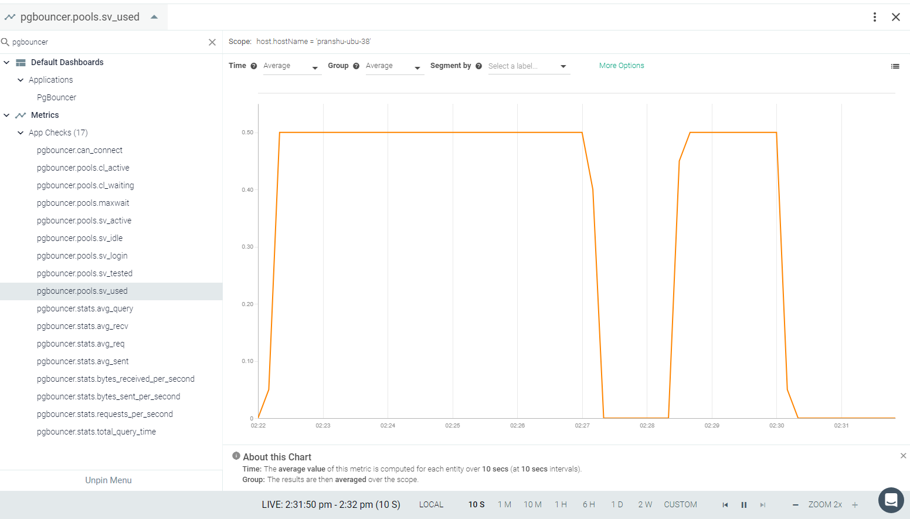 |
| 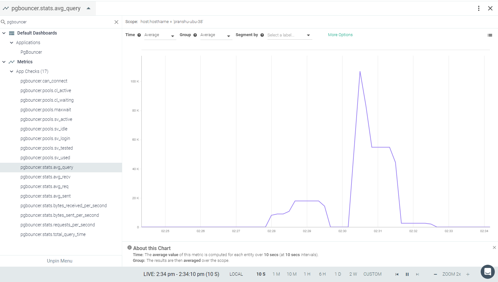 |
| 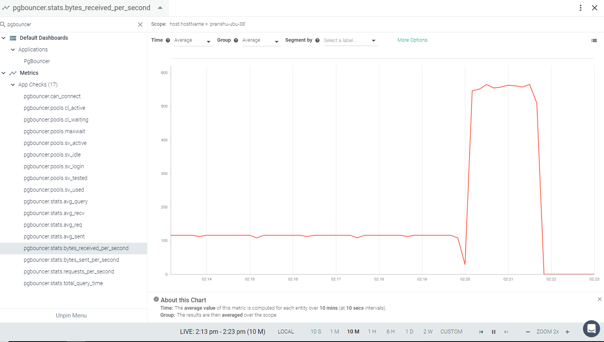 |
| 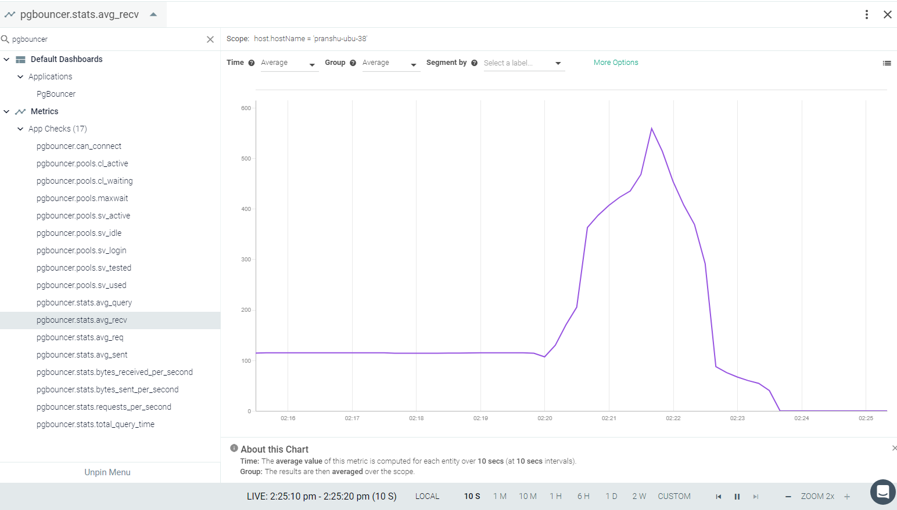 |
PHP-FPM
PHP-FPM (FastCGI Process Manager) is an alternative PHP FastCGI implementation, with some additional features useful for sites of any size, especially busier sites. If PHP-FPM is installed on your environment, the Sysdig agent will automatically connect. You may need to edit the default entries to connect if PHP-FPM has a custom setting in its config file. See Sysdig Agent Configuration.
The Sysdig agent automatically collects all metrics with default configuration.
This page describes the default configuration settings, how to edit the configuration to collect additional information, the metrics available for integration, and a sample result in the Sysdig Monitor UI.
PHP-FPM Setup
This check has a default configuration that should suit most use cases. If it does not work for you, verify that you have added these lines to your php-fpm.conf file. The default location is /etc/
pm.status_path = /status ping.path = /ping
Sysdig Agent Configuration
Review how to Edit dragent.yaml to Integrate or Modify Application Checks.
Default Configuration
By default, Sysdig's dragent.default.yaml uses the following code to connect with PHP-FPM and collect all metrics:
app_checks:
- name: php-fpm
check_module: php_fpm
retry: false
pattern:
exe: "php-fpm: master process"If you have a configuration other than those for PHP-FPM in php-fpm.conf, you can edit the Sysdig agent configuration in dragent.yaml, as shown in Example 1.
Warning
Remember! Never edit dragent.default.yaml directly; always edit only dragent.yaml.
Example
Replace the values of status_url and ping_url below with the values set against pm.status_path and ping.path respectively in your php-fpm.conf:
app_checks:
- name: php-fpm
check_module: php_fpm
pattern:
exe: "php-fpm: master process"
conf:
status_url: /mystatus
ping_url: /myping
ping_reply: mypingreplyMetrics Available
See PHP-FPM Metrics.
Result in the Monitor UI
| 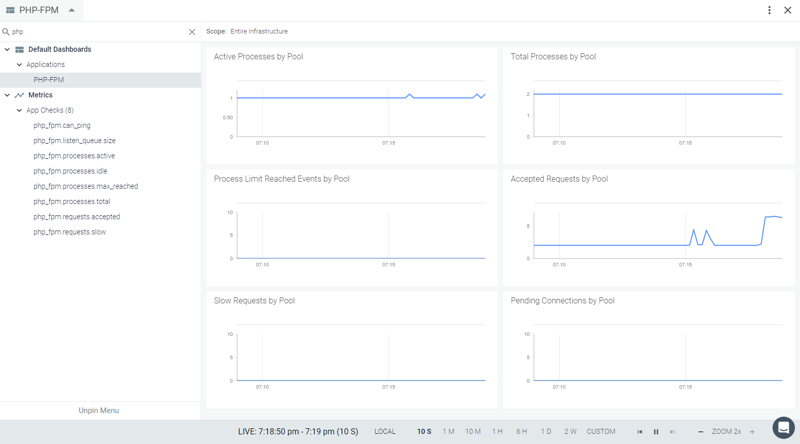 |
| 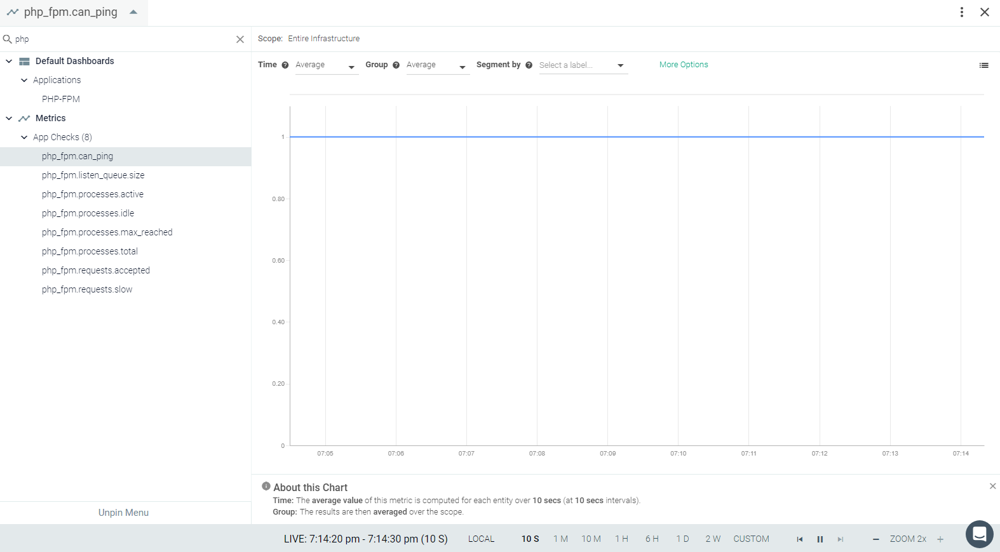 |
| 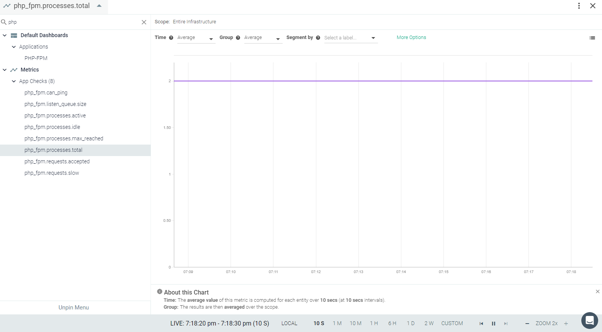 |
| 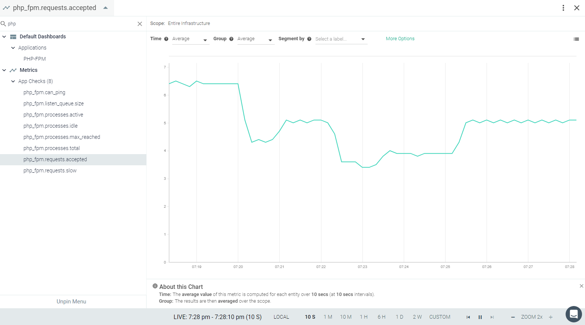 |
PostgreSQL
PostgreSQL is a powerful, open-source, object-relational database system that has earned a strong reputation for reliability, feature robustness, and performance.
If PostgreSQL is installed in your environment, the Sysdig agent will automatically connect in most cases. In some conditions, you may need to create specific user for Sysdig and edit the default entries to connect.
See Default Configuration. The Sysdig agent automatically collects all metrics with the default configuration when correct credentials are provided.
This page describes the default configuration settings, how to edit the configuration to collect additional information, the metrics available for integration, and a sample result in the Sysdig Monitor UI.
PostgreSQL Setup
PostgreSQL will be auto-discovered and the agent will connect through the Unix socket using the Default Configuration with the postgres default user. If this does not work, you can create a user for Sysdig Monitor and give it enough permissions to read Postgres stats. To do this, execute the following example statements on your server:
create user sysdig-cloud with password 'password'; grant SELECT ON pg_stat_database to sysdig_cloud;
Sysdig Agent Configuration
Review how to Edit dragent.yaml to Integrate or Modify Application Checks.
Default Configuration
By default, Sysdig's default.dragent.yaml uses the following code to connect with Postgres.
app_checks:
- name: postgres
pattern:
comm: postgres
port: 5432
conf:
unix_sock: "/var/run/postgresql/.s.PGSQL.{port}"
username: postgresIf a special user for Sysdig is created, then update dragent.yaml file with PostgreSQL#Expanded Example 1.
Warning
Never edit default.dragent.yaml directly; always edit only dragent.yaml.
Example
Update the username and password created for the Sysdig agent in the respective fields, as follows:
app_checks:
- name: postgres
pattern:
comm: postgres
port: 5432
conf:
username: sysdig-cloud
password: passwordMetrics Available
See PostgreSQL Metrics.
Result in the Monitor UI
The default PostgreSQL dashboard includes combined metrics and individual metrics in an overview page.
| 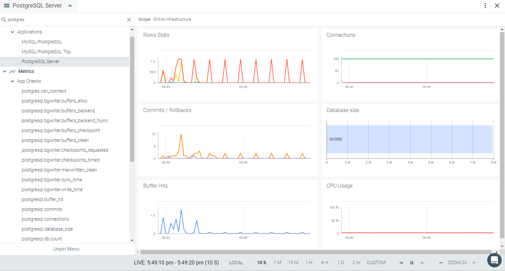 |
You can also view individual metric charts from a drop-down menu in an Explore view.
 |
| 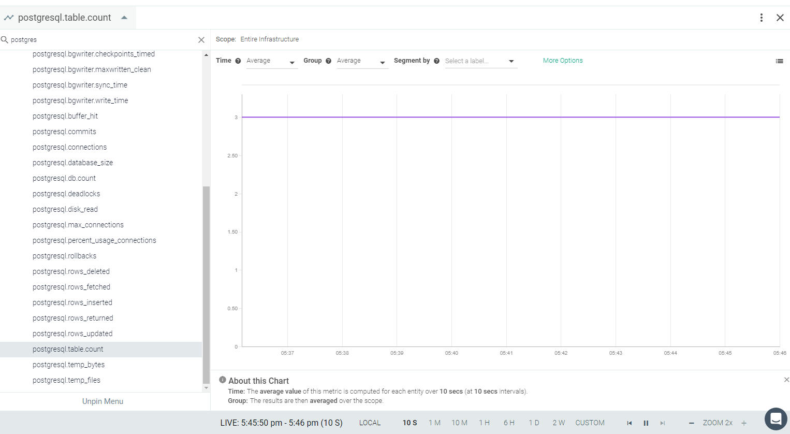 |
 |
RabbitMQ
RabbitMQ is an open-source message-broker software (sometimes called message-oriented middleware) that implements Advanced Message Queuing Protocol (AMQP). The RabbitMQ server is written in the Erlang language and is built on Open Telecom Platform framework for clustering and fail-over. Client libraries to interface with the broker are available in all major programming languages. If RabbitMQ is installed on your environment, the Sysdig agent will automatically connect. See RabbitMQ#Default Configuration.
The Sysdig agent automatically collects all metrics with the default configuration. You may need to edit the dragent.yaml file if a metrics limit is reached.
This page describes the default configuration settings, how to edit the configuration to collect additional information, the metrics available for integration, and a sample result in the Sysdig Monitor UI.
RabbitMQ Setup
Enable the RabbitMQ management plugin. See RabbitMQ’s documentation to enable it.
Sysdig Agent Configuration
Review how to Edit dragent.yaml to Integrate or Modify Application Checks.
Default Configuration
By default, Sysdig's dragent.default.yaml uses the following code to connect with RabbitMQ and collect all metrics.
app_checks:
- name: rabbitmq
pattern:
port: 15672
conf:
rabbitmq_api_url: "http://localhost:15672/api/"
rabbitmq_user: guest
rabbitmq_pass: guestThe RabbitMQ app check tracks various entities, such as exchanges, queues and nodes. Each of these entities has its maximum limits. If the limit is reached, metrics can be controlled by editing the dragent.yaml file, as in the following examples.
Warning
Remember! Never edit dragent.default.yaml directly; always edit only dragent.yaml.
Example 1: Manage logging_interval
When a maximum limit is exceeded, the app check will log an info message:
|
This message is suppressed by a configuration parameter, logging_interval.
Its default value is 300 seconds. This can be altered by specifying a different value in dragent.yaml.
app_checks:
- name: rabbitmq
pattern:
port: 15672
conf:
rabbitmq_api_url: "http://localhost:15672/api/"
rabbitmq_user: guest
rabbitmq_pass: guest
logging_interval: 10 # Value in seconds. Default is 300Example 2: Specify Nodes, Queues or Exchanges
Each of the tracked RabbitMQ entities has its maximum limits. Default limits are as follows:
Exchanges: 50
Queues: 200
Nodes: 100
The metrics for these entities are tagged. If any of these entities are present but no transactions have occurred for them, the metrics are still reported with 0 values, though without tags. Therefore, when segmenting these metrics, the tags will show as unset in the Sysdig Monitor Explore view. However, all such entities are still counted against the maximum limits. In such a scenario, you can specify the entity names for which you want to collect metrics in the dragent.yaml file.
app_checks:
- name: rabbitmq
pattern:
port: 15672
conf:
rabbitmq_api_url: "http://localhost:15672/api/"
rabbitmq_user: guest
rabbitmq_pass: guest
tags: ["queues:<queuename>"]
nodes:
- rabbit@localhost
- rabbit2@domain
nodes_regexes:
- bla.*
queues:
- queue1
- queue2
queues_regexes:
- thisqueue-.*
- another_\d+queue
exchanges:
- exchange1
- exchange2
exchanges_regexes:
- exchange*Example 3: Custom tags
Optional tags can be applied to every emitted metric, service check, and/or event.
Note
Names can be specified by exact name or regular expression.
app_checks:
- name: rabbitmq
pattern:
port: 15672
conf:
rabbitmq_api_url: "http://localhost:15672/api/"
rabbitmq_user: guest
rabbitmq_pass: guest
tags: ["some_tag:some_value"]Metrics Available
See RabbitMQ Metrics.
Result in the Monitor UI
RedisDB
Redis is an open-source (BSD licensed), in-memory data structure store, used as a database, cache, and message broker. If Redis is installed in your environment, the Sysdig agent will automatically connect in most cases. You may need to edit the default entries to get additional metrics. See Default Configuration.
This page describes the default configuration settings, how to edit the configuration to collect additional information, the metrics available for integration, and a sample result in the Sysdig Monitor UI.
Application Setup
Redis will automatically expose all metrics. You do not need to configure anything in the Redis instance.
Sysdig Agent Configuration
Review how to Edit dragent.yaml to Integrate or Modify Application Checks.
Default Configuration
By default, Sysdig's dragent.default.yaml uses the following code to connect with Redis and collect basic metrics:
app_checks:
- name: redis
check_module: redisdb
pattern:
comm: redis-server
conf:
host: 127.0.0.1
port: "{port}"Some additional metrics can be collected by editing the configuration file as shown in following examples. The options shown in Example 2 are relevant if Redis requires authentication or if a Unix socket is used.
Warning
Remember! Never edit dragent.default.yaml directly; always edit only dragent.yaml.
Example 1: Key Lengths
The following example entry results in the metric redis.key.length in the Sysdig Monitor UI, displaying the length of specific keys (segmented by: key). To enable, provide the key names in dragent.yaml as follows.
Note that length is 0 (zero) for keys that have a type other than list, set, hash, or sorted set. Keys can be expressed as patterns; see https://redis.io/commands/keys.
Sample entry in dragent.yaml:
app_checks:
- name: redis
check_module: redisdb
pattern:
comm: redis-server
conf:
host: 127.0.0.1
port: "{port}"
keys:
- "list_1"
- "list_9*"Example 2: Additional Configuration Options
unix_socket_path(Optional) - Can be used if your Redis uses a socket instead of host and port.password(Optional) - Can be used if your Redis requires a password
app_checks:
- name: redis
check_module: redisdb
pattern:
comm: redis-server
conf:
host: 127.0.0.1
port: "{port}"
# unix_socket_path: /var/run/redis/redis.sock # can be used in lieu of host/port
# password: mypassword # if your Redis requires authExample 3: COMMANDSTATS Metrics
You can also collect the INFO COMMANDSTATS result as metrics (redis.command.*). This works with Redis >= 2.6
Sample implementation:
app_checks:
- name: redis
check_module: redisdb
pattern:
comm: redis-server
conf:
host: 127.0.0.1
port: "{port}"
command_stats: trueMetrics Available
See RedisDB Metrics.
Result in the Monitor UI
Riak CS
Riak CS does not ship with a default configuration because it needs at least access_id and access_secret to work. Add the riakcs entry in your dragent.yaml with those unique parameters:
- name: riakcs
pattern:
comm: beam.smp
port: 8080
conf:
access_id: "my_access_id"
access_secret: "my_access_secret"
#is_secure: false
s3_root: s3.amazonaws.devTo get statistics, app_checks also needs permissions to read the riak-cs bucket.
SNMP
Simple Network Management Protocol (SNMP) is an application-layer protocol used to manage and monitor network devices and their functions. The Sysdig agent can connect to network devices and collect metrics using SNMP.
This page describes the default configuration settings, how to edit the configuration to collect additional information, the metrics available for integration, and a sample result in the Sysdig Monitor UI.
SNMP Overview
Simple Network Management Protocol (SNMP) is an Internet Standard protocol for collecting and configuring information about devices in the networks. The network devices include physical devices like switches, routers, servers etc.
SNMP has three primary versions ( SNMPv1, SNMPv2c and SNMPv3) and SNMPv2c is most widely used.
SNMP allows device vendors to expose management data in the form of variables on managed systems organized in a management information base (MIB), which describe the system status and configuration. The devices can be queried as well as configured remotely using these variables. Certain MIBs are generic and supported by the majority of the device vendors. Additionally, each vendor can have their own private/enterprise MIBs for vendor-specific information.
SNMP MIB is a collection of objects uniquely identified by an Object Identifier (OID). OIDs are represented in the form of x.0, where x is the name of object in the MIB definition.
For example, suppose one wanted to identify an instance of the variable sysDescr The object class for sysDescr is: iso org dod internet mgmt mib system sysDescr 1 3 6 1 2 1 1 1 Hence, the object type, x, would be 1.3.6.1.2.1.1.1
SNMP Agent Configuration
To monitor the servers with the Sysdig agent, the SNMP agent must be installed on the servers to query the system information.
For Ubuntu-based servers, use the following commands to install the SNMP Daemon:
$sudo apt-get update $sudo apt-get install snmpd
Next, configure this SNMP agent to respond to queries from the SNMP manager by updating the configuration file located at /etc/snmp/snmpd.conf
Below are the important fields that must be configured:
snmpd.conf
# Listen for connections on all interfaces (both IPv4 *and* IPv6) agentAddress udp:161,udp6:[::1]:161 ## ACCESS CONTROL ## system + hrSystem groups only view systemonly included .1.3.6.1.2.1.1 view systemonly included .1.3.6.1.2.1.25.1 view systemonly included .1.3.6.1.2.1.31.1 view systemonly included .1.3.6.1.2.1.2.2.1.1 # Default access to basic system info rocommunity public default -V systemonly # rocommunity6 is for IPv6 rocommunity6 public default -V systemonly
After making changes to the config file, restart the snmpd service using:
$sudo service snmpd restart
Sysdig Agent Configuration
Review how to Edit dragent.yaml to Integrate or Modify Application Checks.
Default Configuration
No default configuration is present for SNMP check.
You must specify the OID/MIB for every parameter you want to collect, as in the following example.
The OIDs configured in
dragent.yamlare included in thesnmpd.confconfiguration under the 'ACCESS CONTROL' sectionEnsure that the
community_stringis same as configured in the system configuration (rocommunity).
Warning
Remember! Never edit dragent.default.yaml directly; always edit only dragent.yaml.
Example
app_checks:
- name: snmp
pattern:
comm: python
arg: /opt/draios/bin/sdchecks
interval: 30
conf:
mibs_folder: /usr/share/mibs/ietf/
ip_address: 52.53.158.103
port: 161
community_string: public
# Only required for snmp v1, will default to 2
# snmp_version: 2
# Optional tags can be set with each metric
tags:
- vendor:EMC
- array:VNX5300
- location:front
metrics:
- OID: 1.3.6.1.2.1.25.2.3.1.5
name: hrStorageSize
- OID: 1.3.6.1.2.1.1.7
name: sysServices
- MIB: TCP-MIB
symbol: tcpActiveOpens
- MIB: UDP-MIB
symbol: udpInDatagrams
- MIB: IP-MIB
table: ipSystemStatsTable
symbols:
- ipSystemStatsInReceives
metric_tags:
- tag: ipversion
index: 1 # specify which index you want to read the tag value from
- MIB: IF-MIB
table: ifTable
symbols:
- ifInOctets
- ifOutOctets
metric_tags:
- tag: interface
column: ifDescr # specify which column to read the tag value from
The Sysdig agent allows you to monitor the SNMP counters and gauge of your choice. For each device, specify the metrics that you want to monitor in the metrics subsection using one of the following methods:
Specify a MIB and the symbol that you want to export
metrics: - MIB: UDP-MIB symbol: udpInDatagramsSpecify an OID and the name you want the metric to appear under in Sysdig Monitor:
metrics: - OID: 1.3.6.1.2.1.6.5 name: tcpActiveOpens #The name here is the one specified in the MIB but you could use any name.Specify an MIB and a table from which to extract information:
metrics: - MIB: IF-MIB table: ifTable symbols: - ifInOctets metric_tags: - tag: interface column: ifDescr
Metrics Available
The SNMP check does not have default metrics. All metrics mentioned in dragent.yaml file will be seen with snmp.* prefix/
Result in the Monitor UI
Supervisord
Supervisor daemon is a client/server system that allows its users to monitor and control a number of processes on UNIX-like operating systems., The Supervisor check monitors the uptime, status, and number of processes running under Supervisord.
No default configuration is provided for the Supervisor check; you must provide the configuration in the dragent.yaml file for the Sysdig agent to collect the data provided by Supervisor.
This page describes the setup steps required on Supervisor, how to edit the Sysdig agent configuration to collect additional information, the metrics available for integration, and a sample result in the Sysdig Monitor UI.
Supervisor Setup
Configuration
The Sysdig agent can collect data from Supervisor via HTTP server or UNIX socket. The agent collects the same data regardless of the configured collection method.
Un-comment the following or add them if they are not present in /etc/supervisor/supervisord.conf
[inet_http_server] port=localhost:9001 username=user # optional password=pass # optional ... [supervisorctl] serverurl=unix:///tmp/supervisor.sock ... [unix_http_server] file=/tmp/supervisor.sock chmod=777 # make sure chmod is set so that non-root users can read the socket. ... [program:foo] command=/bin/cat
The programs controlled by Supervisor are given by different [program] sections in the configuration. Each program you want to manage by Supervisor must be specified in the Supervisor configuration file, with its supported options in the [program]section. See Supervisor's sample.conf file for details.
Sysdig Agent Configuration
Review how to Edit dragent.yaml to Integrate or Modify Application Checks.
Default Configuration
By default, Sysdig's dragent.default.yaml does not have any configuration to connect the agent with Supervisor. Edit dragent.yaml following the Examples given to connect with Supervisor and collect supervisor.* metrics.
Warning
Remember! Never edit dragent.default.yaml directly; always edit only dragent.yaml.
Example 1: Connect by UNIX Socket
- name: supervisord
pattern:
comm: supervisord
conf:
socket: "unix:///tmp/supervisor.sock"
Example 2: Connect by Host Name and Port, Optional Authentication
- name: supervisord
pattern:
comm: supervisord
conf:
host: localhost
port: 9001
# user: user # Optional. Required only if a username is configured.
# pass: pass # Optional. Required only if a password is configured.Metrics Available
Metric Name | Metric Description |
|---|---|
supervisord.process.count (gauge) | The number of supervisord monitored processes shown as process |
supervisord.process.uptime (gauge) | The process uptime shown as second |
See also Supervisord Metrics.
Service Check
Returns CRITICAL if the Sysdig agent cannot connect to the HTTP server or UNIX socket configured, otherwise OK.
SUPERVISORD STATUS | SUPERVISORD.PROCESS.STATUS |
|---|---|
STOPPED | CRITICAL |
STARTING | UNKNOWN |
RUNNING | OK |
BACKOFF | CRITICAL |
STOPPING | CRITICAL |
EXITED | CRITICAL |
FATAL | CRITICAL |
UNKNOWN | UNKNOWN |
Result in the Monitor UI
TCP
You can monitor the status of your custom application's port using the TCP check. This check will routinely connect to the designated port and send Sysdig Monitor a simple on/off metric and response time.
This page describes the default configuration settings, how to edit the configuration to collect additional information, the metrics available for integration, and a sample result in the Sysdig Monitor UI.
TCP Application Setup
Any application listening on a TCP port can be monitored with tcp_check.
Sysdig Agent Configuration
Review how to Edit dragent.yaml to Integrate or Modify Application Checks.
Default Configuration
No default configuration is provided in the default settings file; you must add the entries in Example 1 to the user settings config file dragent.yaml.
Warning
Remember! Never edit dragent.default.yaml directly; always edit only dragent.yaml.
Example
- name: tcp_check
check_module: tcp_check
pattern:
comm: httpd
arg: DFOREGROUND
conf:
port: 80
collect_response_time: trueThis example shows monitoring a TCP check on an Apache process running on the host on port 80.
comm: is the command for running the Apache server on port 80.
If you want the response time for your port, meaning the amount of time the process takes to accept the connection, you can add the collect_response_time: true parameter under the conf: section and the additional metric network.tcp.response_time will appear in the Metrics list.
Warning
Do not use port: under the pattern: section in this case, because if the process is not listening it will not be matched and the metric will not be sent to Sysdig Monitor.
Metrics Available
Metric Name | Metric Description |
|---|---|
network.tcp.response_time (gauge) | The response time of a given host and TCP port, tagged with url, e.g. 'url:192.168.1.100:22'. shown as second |
See also TCP Metrics.
tcp.can_connect :
DOWN if the agent cannot connect to the configured host and port, otherwise UP.
Result in the Monitor UI
Varnish
Varnish HTTP Cache is a web application accelerator, also known as a "caching HTTP reverse proxy." You install it in front of any server that speaks HTTP and configure it to cache the contents. If Varnish is installed on your environment, the Sysdig agent will automatically connect. See Default Configuration.
The Sysdig Agent automatically collects all metrics. You can also edit the configuration to emit service checks for the back end.
This page describes the default configuration settings, how to edit the configuration to collect additional information, the metrics available for integration, and a sample result in the Sysdig Monitor UI.
Varnish Setup
Varnish will automatically expose all metrics. You do not need to add anything to the Varnish instance.
Sysdig Agent Configuration
Review how to Edit dragent.yaml to Integrate or Modify Application Checks.
Default Configuration
By default, Sysdig's dragent.default.yaml uses the following code to connect with Varnish and collect all but the VBE metrics. (See also Example 2 Enable Varnish VBE Metrics.)
metrics_filter:
- exclude: varnish.VBE.*
app_checks:
- name: varnishapp_checks:
interval: 15
pattern:
comm: varnishd
conf:
varnishstat: /usr/bin/varnishstatOptionally, if you want to submit service checks for the health of each back end, you can configure varnishadm and edit dragent.yaml as in Example 1.
Warning
Remember! Never edit dragent.default.yaml directly; always edit only dragent.yaml.
Example 1 Service Health Checks with varnishadm
When varnishadm is configured, the Sysdig agent requires privileges to execute the binary with root privileges. Add the following to your /etc/sudoers file:
sysdig-agent ALL=(ALL) NOPASSWD:/usr/bin/varnishadm
Then edit dragent.yaml as follows. Note: If you have configured varnishadm and your secret file is NOT /etc/varnish/secret, you can comment out secretfile.
app_checks:
- name: varnish
interval: 15
pattern:
comm: varnishd
conf:
varnishstat: /usr/bin/varnishstat
varnishadm: /usr/bin/varnishadm
secretfile: /etc/varnish/secret This example will enable following service check.
varnish.backend_healthy: The agent submits a service check for each Varnish backend, tagging each with backend:<backend_name>.
Example 2 Enable Varnish VBE Metrics
Varnish VBE metrics are dynamically generated (and therefore are not listed in the Metrics Dictionary). Because they generate unique metric names with timestamps, they can clutter metric handling and are filtered out by default. If you want to collect these metrics, use include in the metrics_filter in dragent.yaml:
metrics_filter:
- include: varnish.VBE.*
app_checks:
- name: varnishapp_checks:
interval: 15
pattern:
comm: varnishd
conf:
varnishstat: /usr/bin/varnishstatMetrics Available
See Varnish Metrics.
Result in the Monitor UI
 |
**Copy of Mesos/Marathon**
Mesos is built using the same principles as the Linux kernel, only at a different level of abstraction. The Mesos kernel runs on every machine and provides applications (e.g., Hadoop, Spark, Kafka, Elasticsearch) with API’s for resource management and scheduling across entire datacenter and cloud environments. Marathon is a production-grade container orchestration platform for Apache Mesos.
If Mesos and Marathon are installed in your environment, the Sysdig agent will automatically connect and start collecting metrics.You may need to edit the default entries to add a custom configuration if the default does not work. See Default Configuration.
This page describes the default configuration settings, how to edit the configuration to collect additional information, the metrics available for integration, and a sample result in the Sysdig Monitor UI.
Mesos/Marathon Setup
Both Mesos and Marathon will automatically expose all metrics. You do not need to add anything to the Mesos/Marathon instance.
Sysdig Agent Configuration
Review how to Edit dragent.yaml to Integrate or Modify Application Checks.
The Sysdig agent has different entries for mesos-master, mesos-slave and marathon in its configuration file. Default entries are present in Sysdig's dragent.default.yaml file and collect all metrics for Mesos. For Marathon, it collects basic metrics. You may need add configuration to collect additional metrics.
Default Configuration
In the urls for mesos-master and mesos-slave, {mesos_url} will be replaced with either the hostname of the autodetected mesos master/slave if autodetection is enabled or an explicit value from mesos_state_uri otherwise.
In the urls for marathon, {marathon_url} will be replaced with the hostname of the first configured/discovered marathon framework.
For all mesos and marathon apps, {auth_token} will either be blank or an autogenerated token obtained via the /acs/api/v1/auth/login endpoint.
app_checks:
- name: mesos-master
check_module: mesos_master
interval: 30
pattern:
comm: mesos-master
conf:
url: "{mesos_url}:{port}"
auth_token: "{auth_token}"
mesos_creds: "{mesos_creds}"app_checks:
- name: mesos-slave
check_module: mesos_slave
pattern:
comm: mesos-slave
interval: 30
conf:
url: "{mesos_url}:{port}"
auth_token: "{auth_token}"
mesos_creds: "{mesos_creds}"
# Name of individual tasks to monitor, if needed
# tasks:
# - mongo
# - cassandraapp_checks:
- name: marathon
check_module: marathon
interval: 30
pattern:
arg: mesosphere.marathon.Main
conf:
url: "{marathon_url}"
auth_token: "{auth_token}"
marathon_creds: "{marathon_creds}"Warning
Remember! Never edit dragent.default.yaml directly; always edit only dragent.yaml.
Example 1
Enable the flag full_metrics to collect all metrics for marathon.
Following additional metrics collected with this configuration:
marathon.cpus
marathon.disk
marathon.instances marathon.mem
app_checks:
- name: marathon
check_module: marathon
interval: 30
pattern:
arg: mesosphere.marathon.Main
conf:
url: "{marathon_url}"
auth_token: "{auth_token}"
marathon_creds: "{marathon_creds}"
full_metrics: trueMetrics Available
Mesos Master
Metric Name | Metric Description |
|---|---|
mesos.framework.cpu (gauge) | Framework cpu |
mesos.framework.mem (gauge) | Framework mem shown as mebibyte |
mesos.framework.disk (gauge) | Framework disk shown as mebibyte |
mesos.role.cpu (gauge) | Role cpu |
mesos.role.mem (gauge) | Role mem shown as mebibyte |
mesos.role.disk (gauge) | Role disk shown as mebibyte |
mesos.cluster.tasks_error (gauge) | Number of tasks that were invalid shown as task |
mesos.cluster.tasks_failed (rate) | Number of failed tasks shown as task |
mesos.cluster.tasks_finished (rate) | Number of finished tasks shown as task |
mesos.cluster.tasks_killed (rate) | Number of killed tasks shown as task |
mesos.cluster.tasks_lost (rate) | Number of lost tasks shown as task |
mesos.cluster.tasks_running (gauge) | Number of running tasks shown as task |
mesos.cluster.tasks_staging (gauge) | Number of staging tasks shown as task |
mesos.cluster.tasks_starting (gauge) | Number of starting tasks shown as task |
mesos.cluster.slave_registrations (gauge) | Number of slaves that were able to cleanly re-join the cluster and connect back to the master after the master is disconnected. |
mesos.cluster.slave_removals (gauge) | Number of slaves removed for various reasons, including maintenance |
mesos.cluster.slave_reregistrations (gauge) | Number of slave re-registrations |
mesos.cluster.slave_shutdowns_canceled (gauge) | Number of cancelled slave shutdowns |
mesos.cluster.slave_shutdowns_scheduled (gauge) | Number of slaves which have failed their health check and are scheduled to be removed |
mesos.cluster.slaves_active (gauge) | Number of active slaves |
mesos.cluster.slaves_connected (gauge) | Number of connected slaves |
mesos.cluster.slaves_disconnected (gauge) | Number of disconnected slaves |
mesos.cluster.slaves_inactive (gauge) | Number of inactive slaves |
mesos.cluster.cpus_percent (gauge) | Percentage of allocated CPUs shown as percent |
mesos.cluster.cpus_used (gauge) | Number of allocated CPUs |
mesos.cluster.cpus_total (gauge) | Number of CPUs |
mesos.cluster.gpus_total (gauge) | Number of GPUs |
mesos.cluster.disk_percent (gauge) | Percentage of allocated disk space shown as percent |
mesos.cluster.disk_used (gauge) | Allocated disk space shown as mebibyte |
mesos.cluster.disk_total (gauge) | Disk space shown as mebibyte |
mesos.cluster.mem_percent (gauge) | Percentage of allocated memory shown as percent |
mesos.cluster.mem_used (gauge) | Allocated memory shown as mebibyte |
mesos.cluster.mem_total (gauge) | Total memory shown as mebibyte |
mesos.registrar.queued_operations (gauge) | Number of queued operations |
mesos.registrar.registry_size_bytes (gauge) | Registry size shown as byte |
mesos.registrar.state_fetch_ms (gauge) | Registry read latency shown as millisecond |
mesos.registrar.state_store_ms (gauge) | Registry write latency shown as millisecond |
mesos.registrar.state_store_ms.count (gauge) | Registry write count |
mesos.registrar.state_store_ms.max (gauge) | Maximum registry write latency shown as millisecond |
mesos.registrar.state_store_ms.min (gauge) | Minimum registry write latency shown as millisecond |
mesos.registrar.state_store_ms.p50 (gauge) | Median registry write latency shown as millisecond |
mesos.registrar.state_store_ms.p90 (gauge) | 90th percentile registry write latency shown as millisecond |
mesos.registrar.state_store_ms.p95 (gauge) | 95th percentile registry write latency shown as millisecond |
mesos.registrar.state_store_ms.p99 (gauge) | 99th percentile registry write latency shown as millisecond |
mesos.registrar.state_store_ms.p999 (gauge) | 99.9th percentile registry write latency shown as millisecond |
mesos.registrar.state_store_ms.p9999 (gauge) | 99.99th percentile registry write latency shown as millisecond |
mesos.cluster.frameworks_active (gauge) | Number of active frameworks |
mesos.cluster.frameworks_connected (gauge) | Number of connected frameworks |
mesos.cluster.frameworks_disconnected (gauge) | Number of disconnected frameworks |
mesos.cluster.frameworks_inactive (gauge) | Number of inactive frameworks |
mesos.stats.system.cpus_total (gauge) | Number of CPUs available |
mesos.stats.system.load_15min (gauge) | Load average for the past 15 minutes |
mesos.stats.system.load_1min (gauge) | Load average for the past minutes |
mesos.stats.system.load_5min (gauge) | Load average for the past 5 minutes |
mesos.stats.system.mem_free_bytes (gauge) | Free memory shown as byte |
mesos.stats.system.mem_total_bytes (gauge) | Total memory shown as byte |
mesos.stats.elected (gauge) | Whether this is the elected master |
mesos.stats.uptime_secs (gauge) | Uptime shown as second |
mesos.cluster.dropped_messages (gauge) | Number of dropped messages shown as message |
mesos.cluster.outstanding_offers (gauge) | Number of outstanding resource offers |
mesos.cluster.event_queue_dispatches (gauge) | Number of dispatches in the event queue |
mesos.cluster.event_queue_http_requests (gauge) | Number of HTTP requests in the event queue shown as request |
mesos.cluster.event_queue_messages (gauge) | Number of messages in the event queue shown as message |
mesos.cluster.invalid_framework_to_executor_messages (gauge) | Number of invalid framework messages shown as message |
mesos.cluster.invalid_status_update_acknowledgements (gauge) | Number of invalid status update acknowledgements |
mesos.cluster.invalid_status_updates (gauge) | Number of invalid status updates |
mesos.cluster.valid_framework_to_executor_messages (gauge) | Number of valid framework messages shown as message |
mesos.cluster.valid_status_update_acknowledgements (gauge) | Number of valid status update acknowledgements |
mesos.cluster.valid_status_updates (gauge) | Number of valid status updates |
Mesos Slave
Metric Name | Metric Description |
|---|---|
mesos.stats.system.cpus_total(gauge) | Number of CPUs available |
mesos.stats.system.load_15min(gauge) | Load average for the past 15 minutes |
mesos.stats.system.load_1min(gauge) | Load average for the past minutes |
mesos.stats.system.load_5min(gauge) | Load average for the past 5 minutes |
mesos.stats.system.mem_free_bytes(gauge) | Free memory |
mesos.stats.system.mem_total_bytes(gauge) | Total memory |
mesos.stats.registered(gauge) | Whether this slave is registered with a master |
mesos.stats.uptime_secs(gauge) | Slave uptime |
mesos.state.task.cpu(gauge) | Task cpu |
mesos.state.task.mem(gauge) | Task memory |
mesos.state.task.disk(gauge) | Task disk |
mesos.slave.tasks_failed(gauge) | Number of failed tasks |
mesos.slave.tasks_finished(gauge) | Number of finished tasks |
mesos.slave.tasks_killed(gauge) | Number of killed tasks |
mesos.slave.tasks_lost(gauge) | Number of lost tasks |
mesos.slave.tasks_running(gauge) | Number of running tasks |
mesos.slave.tasks_staging(gauge) | Number of staging tasks |
mesos.slave.tasks_starting(gauge) | Number of starting tasks |
mesos.slave.cpus_percent(gauge) | Percentage of allocated CPUs |
mesos.slave.cpus_used(gauge) | Number of allocated CPUs |
mesos.slave.cpus_total(gauge) | Number of CPUs |
mesos.slave.disk_percent(gauge) | Percentage of allocated disk space |
mesos.slave.disk_used(gauge) | Allocated disk space |
mesos.slave.disk_total(gauge) | Disk space |
mesos.slave.mem_percent(gauge) | Percentage of allocated memory |
mesos.slave.mem_used(gauge) | Allocated memory |
mesos.slave.mem_total(gauge) | Total memory |
mesos.slave.executors_registering(gauge) | Number of executors registering |
mesos.slave.executors_running(gauge) | Number of executors running |
mesos.slave.executors_terminated(gauge) | Number of terminated executors |
mesos.slave.executors_terminating(gauge) | Number of terminating executors |
mesos.slave.frameworks_active(gauge) | Number of active frameworks |
mesos.slave.invalid_framework_messages(gauge) | Number of invalid framework messages |
mesos.slave.invalid_status_updates(gauge) | Number of invalid status updates |
mesos.slave.recovery_errors(gauge) | Number of errors encountered during slave recovery |
mesos.slave.valid_framework_messages(gauge) | Number of valid framework messages |
mesos.slave.valid_status_updates(gauge) | Number of valid status updates |
Marathon:
Metric Name | Metric Description |
|---|---|
marathon.apps (gauge) | Number of applications |
marathon.backoffFactor (gauge) | Backoff time multiplication factor for each consecutive failed task launch; tagged by app_id and version |
marathon.backoffSeconds (gauge) | Task backoff period; tagged by app_id and version shown as second |
marathon.cpus (gauge) | Configured CPUs for each instance of a given application |
marathon.disk (gauge) | Configured CPU for each instance of a given application shown as mebibyte |
marathon.instances (gauge) | Number of instances of a given application; tagged by app_id and version |
marathon.mem (gauge) | Configured memory for each instance of a given application; tagged by app_id and version shown as mebibyte |
marathon.tasksRunning (gauge) | Number of tasks running for a given application; tagged by app_id and version shown as task |
marathon.tasksStaged (gauge) | Number of tasks staged for a given application; tagged by app_id and version shown as task |
Result in the Monitor UI
 |
 |
**Copy of Riak CS**
Riak CS does not ship with a default configuration because it needs at least access_id and access_secret to work. Add the riakcs entry in your dragent.yaml with those unique parameters:
- name: riakcs
pattern:
comm: beam.smp
port: 8080
conf:
access_id: "my_access_id"
access_secret: "my_access_secret"
#is_secure: false
s3_root: s3.amazonaws.devTo get statistics, app_checks also needs permissions to read the riak-cs bucket.
*MemSQL*
MemSQL will be released with PR: https://github.com/draios/agent/pull/819
Overview
MemSQL is a distributed, highly-scalable SQL database that can run anywhere. If MemSQL is installed on your environment, you may need to edit Sysdig agent's configuration file to connect it with Sysdig. See Default Configuration.
This page describes the default configuration settings, how to edit the configuration to collect additional information, the metrics available for integration, and a sample result in the Sysdig Monitor UI.
Application Setup
MemSQL will automatically expose all metrics. You do not need to add anything on MemSQL instance.
Sysdig Agent Configuration
Review how to Edit dragent.yaml to Integrate or Modify Application Checks.
Default Configuration
No default configuration is present in Sysdig's dragent.default.yaml for MemSQL. You must add a custom entry in dragent.yaml as follows.
Warning
Remember! Never edit dragent.default.yaml directly; always edit only dragent.yaml.
Configuration Example
Update authentication parameters and insert the configuration in dragent.yaml file, as in this example:
app_checks:
- name : memsql
check_module : memsql
pattern:
comm: memsqld
arg: master
conf:
server : 127.0.0.1
port : 3306
user : <username>
pass : <password> #(optional) if setMetrics Available
See **MemSQL Metrics**.
Result in the Monitor UI
*OracleDB*
<This will effective after merging of PR 806 and 1022 >
<Amy comment: I can't find PR 806 and 1022; where are they and what's the status?
Sudhakar - Both these PRs are under review and will be visible once approved by Anoop/Naveen. Currently, Andy Dalton has proposed a solution and we are in process of validating the same.>
Oracle Database 12c is a next-generation database providing a new multi-tenant architecture on top of a fast, scalable, reliable, and secure database platform. If OracleDB is installed on your environment, you need to install and integrate Oracle instant client with Sydig.
This page describes the installation steps for Oracle Instant Client, configuration settings, the metrics available for integration, and a sample result in the Sysdig Monitor UI.
Set Up Sysdig Agent With Oracle Libraries
Install Sysdig agent with Oracle Instant Client Libraries (For Docker users only)
Oracle Setup
Oracle Instant Client Installation
The Oracle app check requires Oracle Instant Client libraries. When Oracle DB is installed as a container, it is necessary to install these dependencies on the host separately to make them available to the Sysdig agent.
When Oracle DB is installed as a process, these dependencies will be installed with Oracle. In that case, you can provide the path of the installation directory to the Sysdig agent by editing dragent.yaml.
Note
Because Oracle Instant Client is a licensed product, Sysdig is unable to include the libraries with the Sysdig agent.
Download Oracle Instant Client from the official Oracle website. You must download and install the packages below. An Oracle login is required.
oracle-instantclient12.2-basic-12.2.0.1.0-1.x86_64.rpm
oracle-instantclient12.2-devel-12.2.0.1.0-1.x86_64.rpm
oracle-instantclient12.2-sqlplus-12.2.0.1.0-1.x86_64.rpm
Once Oracle DB is ready, run the following commands to create a user:
alter session set "_ORACLE_SCRIPT"=true; CREATE USER <username> IDENTIFIED BY <password>; GRANT CONNECT TO <username>; GRANT SELECT ON gv_$sysmetric TO <username>; GRANT SELECT ON sys.dba_data_files TO <username>;
Sysdig Agent Configuration
Set Up Sysdig Agent With Oracle Libraries
After installing Oracle instant Client, you need to link it with Sysdig agent.
If you are installing Sysdig agent as a docker container, a volume must to be mounted in the container with the directory where the Oracle Instant Client is present.
Verify that file
"libclntsh.so"is present at the given path. It may differ based on environment.
Examples:
When Oracle Instant Client is installed separately, it will be installed at:
"/usr/lib/oracle/12.2/client64/lib".Volume Mounted:
-v /usr/lib/oracle/12.2/client64:/usr/lib/oracle/12.2/client64docker run -d --name sysdig-agent --restart always --privileged --net host --pid host -e ACCESS_KEY=XXXXX-XXXXX-XXXX-XXXX-XXXXXXXXXX -e TAGS=some_tag:some_value -v /var/run/docker.sock:/host/var/run/docker.sock -v /dev:/host/dev -v /proc:/host/proc:ro -v /boot:/host/boot:ro -v /lib/modules:/host/lib/modules:ro -v /usr:/host/usr:ro -v /usr/lib/oracle/12.2/client64:/usr/lib/oracle/12.2/client64 --shm-size=350m sysdig/agent
When Oracle is installed as a process on the host, it is present at:
"/u01/app/oracle/product/12.1.0.2/db_1/lib".Volume Monted:
-v /u01/app/oracle/product/12.1.0.2/db_1/:/u01/app/oracle/product/12.1.0.2/db_1/docker run -d --name sysdig-agent --restart always --privileged --net host --pid host -e ACCESS_KEY=XXXXX-XXXXX-XXXX-XXXX-XXXXXXXXXX -e TAGS=some_tag:some_value -v /var/run/docker.sock:/host/var/run/docker.sock -v /dev:/host/dev -v /proc:/host/proc:ro -v /boot:/host/boot:ro -v /lib/modules:/host/lib/modules:ro -v /usr:/host/usr:ro -v /u01/app/oracle/product/12.1.0.2/db_1/:/u01/app/oracle/product/12.1.0.2/db_1/ --shm-size=350m sysdig/agent
Configure Oracle Libraries for Sysdig Agent
Link Oracle Instant Client libraries with ldconfig so that they will be available to the Sysdig Agent at runtime. If the Sysdig agent is installed inside the Docker container, run ldconfig commands inside the container.
Provide the library location in the ld configuration file. (Verify that file "
libclntsh.so" is present at given path.)Run ldconfig .
Example:
echo /u01/app/oracle/product/12.1.0.2/db_1/lib/ > /etc/ld.so.conf.d/oracle.conf ldconfig
Make sure
libaioorlibaio1packege is installed in your environment
Default Configuration
Review how to Edit dragent.yaml to Integrate or Modify Application Checks.
There is no default configuration for OracleDB, as a unique user and password are required for metrics polling. You must add the entry for OracleDB into dragent.yaml.
Warning
Remember! Never edit dragent.default.yaml directly; always edit only dragent.yaml.
Example 1
Confirm the
"comm"value using the command:cat /proc/<pid>/commReplace
<username>and<password>with username and password created for sysdig agent.Update
service_nameif different service name is used. services can be listed with command:lsnrctl statusUpdate
ORACLE_HOMEwith the value of theORACLE_HOMEenvironment variable (fromoracleuser) or with the installation directory of Oracle DB
app_checks:
- name: oracle
check_module: oracle
pattern:
comm: "tnslsnr"
conf:
server: localhost
user: <username>
password: <password>
service_name: cdb1
envs:
ORACLE_HOME: /u01/app/oracle/product/12.1.0.2/db_1
log_errors: trueMetrics Available
Metric Name | Metric Description |
|---|---|
oracle.buffer_cachehit_ratio (gauge) | Ratio of buffer cache hits shown as fraction |
oracle.cursor_cachehit_ratio (gauge) | Ratio of cursor cache hits shown as fraction |
oracle.library_cachehit_ratio (gauge) | Ratio of library cache hits shown as fraction |
oracle.shared_pool_free (gauge) | shared pool free memory % shown as percent |
oracle.physical_reads (gauge) | physical reads per sec shown as read |
oracle.physical_writes (gauge) | physical writes per sec shown as write |
oracle.enqueue_timeouts (gauge) | enqueue timeouts per sec shown as timeout |
oracle.gc_cr_block_received (gauge) | GC CR block received shown as block |
oracle.cache_blocks_corrupt (gauge) | corrupt cache blocks shown as block |
oracle.cache_blocks_lost (gauge) | lost cache blocks shown as block |
oracle.logons (gauge) | number of logon attempts |
oracle.active_sessions (gauge) | number of active sessions |
oracle.long_table_scans (gauge) | number of long table scans per sec shown as scan |
oracle.service_response_time (gauge) | service response time shown as second |
oracle.user_rollbacks (gauge) | number of user rollbacks shown as operation |
oracle.sorts_per_user_call (gauge) | sorts per user call |
oracle.rows_per_sort (gauge) | rows per sort shown as row |
oracle.disk_sorts (gauge) | disk sorts per second shown as operation |
oracle.memory_sorts_ratio (gauge) | memory sorts ratio shown as fraction |
oracle.database_wait_time_ratio (gauge) | memory sorts per second shown as fraction |
oracle.session_limit_usage (gauge) | session limit usage shown as percent |
oracle.session_count (gauge) | session count |
oracle.temp_space_used (gauge) | temp space used shown as byte |
oracle.tablespace.used (gauge) | tablespace used shown as byte |
oracle.tablespace.size (gauge) | tablespace size shown as byte |
oracle.tablespace.in_use (gauge) | tablespace in-use shown as fraction |
Result in the Monitor UI
**TokuMX**
Support background: https://sysdig.atlassian.net/wiki/spaces/EN/pages/118119/App+checks#Appchecks-TokuMX